B3_flowkit · Opus 5.5 · attempt om7shm2
Batch fk1 · job fk1_B_EXP22004363_run1_221202_flowkit_claude-opus-5-5 · trial B_EXP22004363_run1_221202_flowki__om7shm2. Long tool outputs are cut at 6,000 characters.
Score
0.58
0.58
Minutes
18.0
18.0
Agent cost
$4.07
$4.07
Steps
201
201
Screenshots / images
14
14
2
agent
I'll start by reading the plan and layout.
3
tool call · Bash
cat /task/inputs/plan.md; echo ----; cat /task/inputs/plate_layout.csv; ls /task/inputs/raw | head; ls /task/inputs/raw | wc -l; ls /task/outputs 2>/dev/null
4
tool output
# EXP22004363 | 2022.11.28 Caspase Activity Assay Dev: Progranulin Conditioned Media This is the notebook entry text up to flow acquisition on 2022-12-02. People's names have been removed. - **Tags:** Target PGRN; Technology Assay development; Model System Cell based; Methodology Flow; Cell Type H4. - **Plate maps:** shown below as grids (rows A-H, columns 1-12). Empty cells are blank. - **Highlight colours:** the notebook encodes conditioned-media treatment by highlight colour. The colours are listed at the end. ## DAY 2022-11-28 ### Purpose To determine if progranulin conditioned media can restore wild-type levels of caspase activity in H4 GRN KO cells. ### Rationale Previous literature evidence suggests that applying exogenous progranulin to cells can restore molecular phenotypes in progranulin deficient lines. Our previous experiment with caspase activity on H4 GRN WT and KO cells showed that GRN KO lines had increased caspase activity. This difference was enhanced after campothesin challenge in both GRN WT and KO cells ( ). In this experiment, we will determine if applying conditioned media from WT cell lines onto KO lines can reduce caspase activity closer to WT levels. ### Materials - H4 WT cells - H4 PGRN KO E1 - H4 PGRN KO E3 - H4 media (DMEM + 10% FBS) - CellEvent Caspase-3/7 Green Flow Cytometry Assay Kit - Camptothecin - Plate 10k cells according to plate: | | 1 | 2 | 3 | 4 | 5 | 6 | 7 | 8 | 9 | 10 | 11 | 12 | |---|---|---|---|---|---|---|---|---|---|---|---|---| | A | WT | WT | WT | WT | WT | WT | WT | WT | WT | | | | | B | WT | WT | WT | WT | WT | WT | WT | WT | WT | | | | | C | WT | WT | WT | WT | WT | WT | WT | WT | WT | | | | | D | WT | WT | WT | WT | WT | WT | WT | WT | WT | | | | | E | E1 | E1 | E1 | E1 | E1 | E1 | E1 | E1 | E1 | | | | | F | E3 | E3 | E3 | E3 | E3 | E3 | E3 | E3 | E3 | | | | | G | | | | | | | | | Serum free media | | | | | H | 24 hr | | | | 48 hr | | | | | | | | - WT-330K for 33 wells-resuspend in 3300mL - E1 and E3-90K for 9 wells-resuspend in 900uL ## DAY 2022-11-29 - Harvest media after 24 and 48 hrs and place in 4 C until ready to use. ## DAY 2022-11-30 - Plate cells according to the following plate map and incubate at 37C: | | 1 | 2 | 3 | 4 | 5 | 6 | 7 | 8 | 9 | 10 | 11 | 12 | |---|---|---|---|---|---|---|---|---|---|---|---|---| | A | WT | WT | WT | WT | WT | WT | WT | WT | WT | WT | WT | WT | | B | E1 | E1 | E1 | E1 | E1 | E1 | E1 | E1 | E1 | E1 | E1 | E1 | | C | E3 | E3 | E3 | E3 | E3 | E3 | E3 | E3 | E3 | E3 | E3 | E3 | | D | WT | WT | WT | WT | WT | WT | WT | WT | WT | WT | WT | WT | | E | E1 | E1 | E1 | E1 | E1 | E1 | E1 | E1 | E1 | E1 | E1 | E1 | | F | E3 | E3 | E3 | E3 | E3 | E3 | E3 | E3 | E3 | E3 | E3 | E3 | | G | WT no treatment | WT no treatment | E3 no treatment | E3 no treatment | | | | | | | | | | H | E1 no treatment | E1 no treatment | WT (flow control) | WT (flow control) | | | | | | | | | ## DAY 2022-12-01 - Gently wash cells with DMEM. - Replace media with conditioned media collected previously. Conditioned media added at 9AM ## DAY 2022-12-02 - After 24 hours, add campthothesin according to the plate map: | | 1 | 2 | 3 | 4 | 5 | 6 | 7 | 8 | 9 | 10 | 11 | 12 | |---|---|---|---|---|---|---|---|---|---|---|---|---| | A | WT 10uM | WT 5uM | WT 2uM | WT DMSO | WT 10uM | WT 5uM | WT 2uM | WT DMSO | WT 10uM | WT 5uM | WT 2uM | WT DMSO | | B | E1 10uM | E1 5uM | E1 2uM | E1 DMSO | E1 10uM | E1 5uM | E1 2uM | E1 DMSO | E1 10uM | E1 5uM | E1 2uM | E1 DMSO | | C | E3 10uM | E3 5uM | E3 2uM | E3 DMSO | E3 10uM | E3 5uM | E3 2uM | E3 DMSO | E3 10uM | E3 5uM | E3 2uM | E3 DMSO | | D | WT 10uM | WT 5uM | WT 2uM | WT DMSO | WT 10uM | WT 5uM | WT 2uM | WT DMSO | WT 10uM | WT 5uM | WT 2uM | WT DMSO | | E | E1 10uM | E1 5uM | E1 2uM | E1 DMSO | E1 10uM | E1 5uM | E1 2uM | E1 DMSO | E1 10uM | E1 5uM | E1 2uM | E1 DMSO | | F | E3 10uM | E3 5uM | E3 2uM | E3 DMSO | E3 10uM | E3 5uM | E3 2uM | E3 DMSO | E3 10uM | E3 5uM | E3 2uM | E3 DMSO | | G | WT no treatment (no stain) | WT no treatment | E3 no treatment | E3 no treatment | E1 no treatment | E1 no treatment | WT (caspase stain only) | WT (L/D stain only) | | | | | | H | | | | | | | | | | | | | - Blue highlight=treated with WT 24hr conditoned media - Green highlight= treated with WT 48hr conditioned media - No highlight= no conditioned media treatment - Incubate and run flow. - Aspirate media and wash with PBS - Add 150uL trypsin incubate for 5min - Add 75uL FBS and collect into 96w round bottom plate - spin down 200xg for 5min - Add 200uL of Cell Event Caspase 3/7 Detection reagent (1:1000) in flow staining buffer. Incubate for 30min at 37C - Prepare SYTOX AAdvanced Dead Cell Stain at 100uM concentration by adding 1000uL DMSO to stain. Mix well - During the final 5 minutes of 30min Caspase incubation add 2uL of the 100uM Dead Cell stain (final concentration of 1uM) - Analyze the samples without fixing. Flow cytometer settings: FSC-20; SSC-290; BL1 (caspase)-225, BL2 (AAddvanced Dead Cell Stain)-350 ## Plate-map cell colours (from the notebook's highlighting; the plain-text maps above drop colour) ### Plate map of 2022-11-28 - row A: WT [light cyan #C2EDF8] x8 (cols 1-8) | WT (col 9, no highlight) | - | - | - - row B: WT [light cyan #C2EDF8] x8 (cols 1-8) | WT (col 9, no highlight) | - | - | - - row C: WT [light cyan #C2EDF8] x8 (cols 1-8) | WT (col 9, no highlight) | - | - | - - row D: WT [light green #E8F9CF] x8 (cols 1-8) | WT (col 9, no highlight) | - | - | - - row E: E1 [light green #E8F9CF] x8 (cols 1-8) | E1 (col 9, no highlight) | - | - | - - row F: E3 [light green #E8F9CF] x8 (cols 1-8) | E3 (col 9, no highlight) | - | - | - - row G: cols 1-8 empty | Serum free media (col 9) | - | - | - - row H: 24 hr (col 1) | - | - | - | 48 hr (col 5) | remaining cols empty ### Plate map of 2022-11-30 - rows A-C: cols 1-8 [light cyan #C2EDF8], cols 9-12 no highlight (A = WT, B = E1, C = E3) - rows D-F: cols 1-8 [light green #E8F9CF], cols 9-12 no highlight (D = WT, E = E1, F = E3) - r … [7,856 more characters not shown]
6
tool call · Bash
cd /task; python3 -c "
import flowkit as fk, flowio
s=fk.Sample('inputs/raw/Caspase-assay-2-mlk_caspase_Group_A1.fcs')
print(s.channels)
print(s.event_count)
m=s.get_metadata()
for k,v in m.items(): print(k,'=',v)
"7
tool output
channel_number pnn pns png pne pnr 0 1 Time Time 1.0 (0.0, 0.0) 67108864.0 1 2 FSC-A FSC-A 1.0 (0.0, 0.0) 1048576.0 2 3 SSC-A SSC-A 1.0 (0.0, 0.0) 1048576.0 3 4 BL1-A AAV-GFP-GFP-A 1.0 (0.0, 0.0) 1048576.0 4 5 BL2-A AAdvanced livedead-A 1.0 (0.0, 0.0) 1048576.0 5 6 FSC-H FSC-H 1.0 (0.0, 0.0) 1048576.0 6 7 SSC-H SSC-H 1.0 (0.0, 0.0) 1048576.0 7 8 BL1-H AAV-GFP-GFP-H 1.0 (0.0, 0.0) 1048576.0 8 9 BL2-H AAdvanced livedead-H 1.0 (0.0, 0.0) 1048576.0 9 10 FSC-W FSC-W 1.0 (0.0, 0.0) 1024.0 10 11 SSC-W SSC-W 1.0 (0.0, 0.0) 1024.0 11 12 BL1-W AAV-GFP-GFP-W 1.0 (0.0, 0.0) 1024.0 12 13 BL2-W AAdvanced livedead-W 1.0 (0.0, 0.0) 1024.0 31328 par = 13 tot = 31328 mode = L datatype = F byteord = 1,2,3,4 p1f = NA p1l = NA p1s = Time p1v = NA p1n = Time p1b = 32 p1r = 67108864 p1e = 0,0 p2f = NA p2l = 488 p2s = FSC-A p2v = 20 p2n = FSC-A p2b = 32 p2r = 1048576 p2e = 0,0 p3f = NA p3l = 488 p3s = SSC-A p3v = 290 p3n = SSC-A p3b = 32 p3r = 1048576 p3e = 0,0 p4f = NA p4l = 488 p4s = AAV-GFP-GFP-A p4v = 225 p4n = BL1-A p4b = 32 p4r = 1048576 p4e = 0,0 p5f = NA p5l = 488 p5s = AAdvanced livedead-A p5v = 350 p5n = BL2-A p5b = 32 p5r = 1048576 p5e = 0,0 p6f = NA p6l = 488 p6s = FSC-H p6v = 20 p6n = FSC-H p6b = 32 p6r = 1048576 p6e = 0,0 p7f = NA p7l = 488 p7s = SSC-H p7v = 290 p7n = SSC-H p7b = 32 p7r = 1048576 p7e = 0,0 p8f = NA p8l = 488 p8s = AAV-GFP-GFP-H p8v = 225 p8n = BL1-H p8b = 32 p8r = 1048576 p8e = 0,0 p9f = NA p9l = 488 p9s = AAdvanced livedead-H p9v = 350 p9n = BL2-H p9b = 32 p9r = 1048576 p9e = 0,0 p10f = NA p10l = 488 p10s = FSC-W p10v = 20 p10n = FSC-W p10b = 32 p10r = 1024 p10e = 0,0 p11f = NA p11l = 488 p11s = SSC-W p11v = 290 p11n = SSC-W p11b = 32 p11r = 1024 p11e = 0,0 p12f = NA p12l = 488 p12s = AAV-GFP-GFP-W p12v = 225 p12n = BL1-W p12b = 32 p12r = 1024 p12e = 0,0 p13f = NA p13l = 488 p13s = AAdvanced livedead-W p13v = 350 p13n = BL2-W p13b = 32 p13r = 1024 p13e = 0,0 cyt = 0A29009 Attune NxT Acoustic Focusing Cytometer (Lasers: BRV6Y) sys = SEA11065ATTUNE Microsoft Windows 10 Enterprise LTSC spillover = 6,BL1-A,BL2-A,BL1-H,BL2-H,BL1-W,BL2-W,1.000000,0.000000,0.000000,0.000000,0.000000,0.000000,0.000000,1.000000,0.000000,0.000000,0.000000,0.000000,0.000000,0.000000,1.000000,0.000000,0.000000,0.000000,0.000000,0.000000,0.000000,1.000000,0.000000,0.000000,0.000000,0.000000,0.000000,0.000000,1.000000,0.000000,0.000000,0.000000,0.000000,0.000000,0.000000,1.000000 btim = 14:33:37 cells = NA com = NA cytsn = 2AFC228071019 date = 02-Dec-2022 etim = 14:33:54 exp = NA fil = A1.fcs inst = NA originality = Original lost = 0 op = Jeff Huang plateid = NA platename = Caspase-assay-2-mlk proj = caspase smno = Group src = NA timestep = 0.001 vol = 133000 wellid = A1 #coincidentcount = 756 #flowrate = 500 #laser1asf = 1.05 #laser1color = Blue #laser1delay = 1100 #laser2asf = 1.09 #laser2color = Red #laser2delay = 1514 #laser3asf = 1.02 #laser3color = Violet #laser3delay = 702 #laser4asf = 0.98 #laser4color = Yellow #laser4delay = 275 #laserconfig = BRV6Y #p12label = GFP #p12target = AAV-GFP #p13target = AAdvanced livedead #p1label = NA #p1target = NA #p4label = GFP #p4target = AAV-GFP #p5target = AAdvanced livedead #p8label = GFP #p8target = AAV-GFP #p9target = AAdvanced livedead #ptdate = 02-Dec-2022 #ptresult = Pass #tr1 = OR_FSC,25000 #widththreshold = 1000 #winext = 0 hostid = SEA11065ATTUNE begindata = 000000008192 enddata = 000001637247 nextdata = 000000000000 beginstext = 000000000000 endstext = 000000000000 beginanalysis = 000000000000 endanalysis = 000000000000
9
agent
BL1 carries an outdated "AAV-GFP" label but its voltage (225) matches the plan's caspase detector; BL2 (350) is SYTOX AADvanced. Let me survey all 80 files.
10
tool call · Bash
mkdir -p /task/work /task/outputs; cd /task/work; cat > survey.py <<'EOF'
import flowkit as fk, pandas as pd, numpy as np, glob, os
lay=pd.read_csv('/task/inputs/plate_layout.csv')
rows=[]
for _,r in lay.iterrows():
s=fk.Sample('/task/inputs/raw/'+r.file)
m=s.get_metadata()
df=s.as_dataframe(source='raw')
df.columns=[c[0] for c in df.columns]
t=df['Time'].values*float(m['timestep'])
n=len(df)
sat={c:(df[c]>=1048575*0.999).mean()*100 for c in ['FSC-A','SSC-A','BL1-A','BL2-A']}
rows.append(dict(well=r.well,sample=r['sample'],n=n,vol=m.get('vol'),btim=m['btim'],etim=m['etim'],tmax=t.max(),rate=n/max(t.max(),1e-9),
coinc=m.get('#coincidentcount'),
fsc_med=np.median(df['FSC-A']),ssc_med=np.median(df['SSC-A']),bl1_med=np.median(df['BL1-A']),bl2_med=np.median(df['BL2-A']),
bl1_p99=np.percentile(df['BL1-A'],99),bl2_p99=np.percentile(df['BL2-A'],99),
**{'sat_'+k:v for k,v in sat.items()}, neg_bl1=(df['BL1-A']<=0).mean()*100))
out=pd.DataFrame(rows)
pd.set_option('display.width',250); pd.set_option('display.max_rows',200)
print(out.to_string())
out.to_csv('survey.csv',index=False)
EOF
python3 survey.py11
tool output
well sample n vol btim etim tmax rate coinc fsc_med ssc_med bl1_med bl2_med bl1_p99 bl2_p99 sat_FSC-A sat_SSC-A sat_BL1-A sat_BL2-A neg_bl1 0 A1 WT 10uM 31328 133000 14:33:37 14:33:54 0.015980 1.960451e+06 756 273564.0 153024.5 174.0 874.0 5281.46 195360.29 0.845889 0.775664 0.0 0.012768 6.310649 1 A2 WT 5uM 40169 140000 14:34:20 14:34:37 0.016706 2.404465e+06 936 297602.0 170869.0 185.0 833.0 5221.32 150223.24 0.572581 0.699544 0.0 0.000000 5.626229 2 A3 WT 2uM 47337 142000 14:35:03 14:35:21 0.016851 2.809151e+06 1041 267990.0 160489.0 185.0 767.0 4982.92 130902.48 0.430953 0.610516 0.0 0.000000 5.610833 3 A4 WT DMSO 33079 140000 14:35:48 14:36:05 0.016632 1.988877e+06 913 282823.0 162713.0 225.0 1066.0 7231.10 235790.54 0.949243 1.088304 0.0 0.018138 5.299435 4 A5 WT 10uM 34963 140000 14:36:31 14:36:48 0.016749 2.087468e+06 867 274442.0 167605.0 194.0 897.0 5676.32 176735.92 0.709321 0.818008 0.0 0.002860 5.265566 5 A6 WT 5uM 33431 131000 14:37:16 14:37:32 0.015660 2.134802e+06 717 350928.0 184863.0 206.0 1392.0 5617.70 148823.90 1.145643 0.801651 0.0 0.005982 4.564626 6 A7 WT 2uM 36445 141000 14:37:59 14:38:16 0.016841 2.164064e+06 693 341038.0 182660.0 208.0 1311.0 5478.24 137492.40 0.834134 0.642063 0.0 0.000000 4.398409 7 A8 WT DMSO 22867 133000 14:38:44 14:39:00 0.015832 1.444353e+06 542 353126.0 182327.0 221.0 1593.0 7524.68 283707.04 1.513097 1.307561 0.0 0.048104 4.666113 8 A9 WT 10uM 40034 140000 14:39:26 14:39:44 0.016671 2.401416e+06 1000 250810.0 134329.0 174.0 751.0 6256.03 160713.16 0.926712 0.789329 0.0 0.009992 7.193885 9 A10 WT 5uM 42298 140000 14:40:10 14:40:27 0.016647 2.540878e+06 1046 276477.5 160995.5 178.0 771.0 5793.12 146335.11 0.955128 0.728167 0.0 0.000000 6.468391 10 A11 WT 2uM 43376 140000 14:40:54 14:41:11 0.016621 2.609711e+06 1113 273871.5 154000.5 183.0 741.0 6005.75 155472.25 0.853006 0.737735 0.0 0.000000 5.659812 11 A12 WT DMSO 30724 133000 14:41:38 14:41:55 0.015960 1.925063e+06 819 253281.5 139325.0 189.0 899.0 8237.39 214389.48 0.966671 0.901575 0.0 0.016274 6.245932 12 B1 E1 10uM 18757 140000 14:42:21 14:42:39 0.016702 1.123039e+06 352 285646.0 186835.0 1102.0 5301.0 13087.80 292202.96 0.293224 0.394519 0.0 0.037319 2.409767 13 B2 E1 5uM 32477 133000 14:43:07 14:43:23 0.015827 2.052000e+06 623 301651.0 158869.0 928.0 3883.0 9277.60 137745.96 0.360255 0.132401 0.0 0.000000 2.420174 14 B3 E1 2uM 40067 140000 14:43:49 14:44:07 0.016738 2.393775e+06 843 294948.0 148051.0 1012.0 4334.0 10700.42 145677.06 0.269549 0.094841 0.0 0.000000 2.558215 15 B4 E1 DMSO 19965 133000 14:44:35 14:44:51 0.015884 1.256925e+06 719 262965.0 173438.0 1002.0 4744.0 23698.76 496570.92 0.631104 1.006762 0.0 0.320561 3.405960 16 B5 E1 10uM 17852 140000 14:45:17 14:45:34 0.016773 1.064330e+06 258 287369.0 186609.0 1139.0 5880.5 10309.35 203921.62 0.184853 0.117634 0.0 0.000000 1.658078 17 B6 E1 5uM 31705 140000 14:46:01 14:46:18 0.016655 1.903633e+06 653 295886.0 162256.0 980.0 4650.0 9825.84 127982.40 0.353257 0.135625 0.0 0.000000 2.315092 18 B7 E1 2uM 35417 133000 14:46:46 14:47:02 0.015885 2.229588e+06 728 282222.0 157995.0 1023.0 5036.0 10095.56 133892.12 0.327526 0.110117 0.0 0.000000 2.340684 19 B8 E1 DMSO 26222 140000 14:47:28 14:47:46 0.016718 1.568489e+06 588 270288.5 152482.0 890.0 4399.0 12550.16 219341.54 0.469072 0.293647 0.0 0.011441 2.982229 20 B9 E1 10uM 34411 133000 14:48:13 14:48:29 0.015809 2.176672e+06 798 270844.0 145264.0 380.0 1780.0 9728.60 126473.50 0.592834 0.244108 0.0 0.002906 4.268984 21 B10 E1 5uM 40098 140000 14:48:56 14:49:13 0.016698 2.401365e+06 983 275149.0 141426.0 383.0 1692.0 8360.15 106522.73 0.606015 0.326700 0.0 0.002494 4.244601 22 B11 E1 2uM 41005 141000 14:49:40 14:49:57 0.016829 2.436568e+06 933 242468.0 121007.0 401.0 1863.0 6618.80 65377.96 0.443848 0.134130 0.0 0.000000 3.997074 23 B12 E1 DMSO 31680 133000 14:50:24 14:50:41 0.015942 1.987204e+06 784 177678.0 93861.5 264.0 1224.5 6551.52 108817.20 0.719697 0.265152 0.0 0.003157 5.596591 24 C1 E3 10uM 17681 138000 14:51:07 14:51:25 0.016524 1.070019e+06 348 361736.0 244939.0 551.0 4567.0 16077.20 250506.80 2.991912 3.631016 0.0 0.011312 4.179628 25 C2 E3 5uM 25455 140000 14:51:51 14:52:08 0.016788 1.516262e+06 597 231796.0 162455.0 357.0 2137.0 13205.92 195926.86 1.885681 3.586722 0.0 0.000000 5.763111 26 C3 E3 2uM 21098 133000 14:52:36 14:52:52 0.015902 1.326751e+06 370 376067.5 268810.5 426.5 3269.5 12389.12 200352.29 3.076121 3.758650 0.0 … [11,414 more characters not shown]
13
thinking
Both fluorescence channels are confirmed (BL1 as caspase-3/7, BL2 as SYTOX AADvanced, the "AAV-GFP" label being stale), and I'm checking event-rate stability and scatter distributions next.
14
tool call · Bash
cd /task/work; cat > load.py <<'EOF'
import flowkit as fk, pandas as pd, numpy as np
lay=pd.read_csv('/task/inputs/plate_layout.csv')
def load(well):
f=lay.set_index('well').loc[well,'file']
s=fk.Sample('/task/inputs/raw/'+f)
df=s.as_dataframe(source='raw'); df.columns=[c[0] for c in df.columns]
return s,df
EOF
cat > timeplot.py <<'EOF'
import matplotlib; matplotlib.use('Agg')
import matplotlib.pyplot as plt, numpy as np
from load import *
fig,axs=plt.subplots(8,10,figsize=(30,20))
for ax,w in zip(axs.flat,lay.well):
s,df=load(w)
t=df['Time'].values
h,e=np.histogram(t,bins=40)
ax.plot(e[:-1],h,'k-')
ax2=ax.twinx()
# rolling median FSC
idx=np.argsort(t)
ax2.plot(t[idx][::50], np.log10(np.clip(df['BL1-A'].values[idx],1,None))[::50],'g.',ms=1,alpha=0.3)
ax.set_title(f"{w} n={len(t)} tmax={t.max():.1f}",fontsize=8)
plt.tight_layout(); plt.savefig('time.png',dpi=50)
print(df['Time'].describe())
EOF
python3 timeplot.py15
tool output
count 24323.000000 mean 8.274421 std 4.491079 min 0.015000 25% 4.554500 50% 8.519000 75% 11.647000 max 16.435000 Name: Time, dtype: float64
16
tool call · Read
{
"file_path": "/task/work/time.png"
}17
tool output
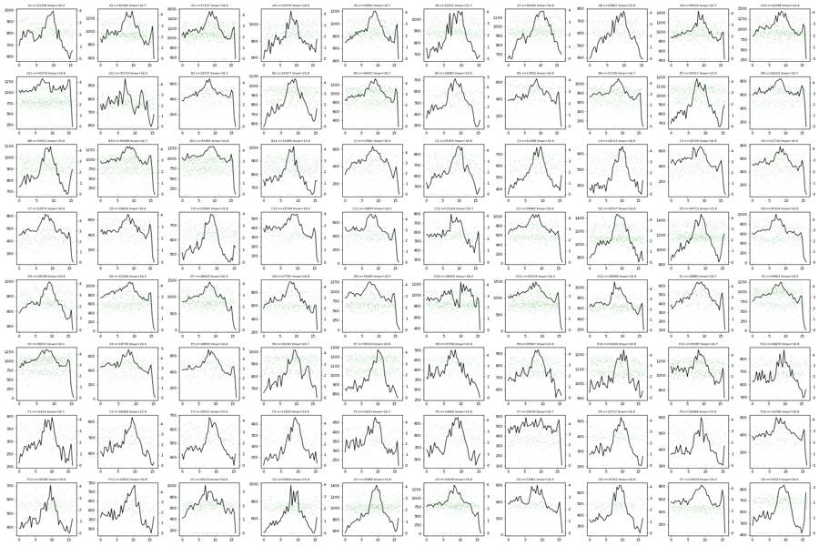
19
agent
Event rates are stable through each run (no gaps or collapses). Now scatter overviews.
20
tool call · Bash
cd /task/work; cat > scat.py <<'EOF'
import matplotlib; matplotlib.use('Agg')
import matplotlib.pyplot as plt, numpy as np, sys
from load import *
wells=sys.argv[2].split(',') if len(sys.argv)>2 else list(lay.well)
mode=sys.argv[1]
n=len(wells); nc=10; nr=int(np.ceil(n/nc))
fig,axs=plt.subplots(nr,nc,figsize=(3*nc,3*nr),squeeze=False)
def asinh(x,c=200): return np.arcsinh(x/c)
for ax,w in zip(axs.flat,wells):
s,df=load(w)
if mode=='fs':
ax.hist2d(df['FSC-A'],df['SSC-A'],bins=150,range=[[0,1.05e6],[0,1.05e6]],cmap='jet',cmin=1,norm=matplotlib.colors.LogNorm())
elif mode=='fslog':
ax.hist2d(np.log10(np.clip(df['FSC-A'],1e3,None)),np.log10(np.clip(df['SSC-A'],1e3,None)),bins=150,range=[[3,6.1],[3,6.1]],cmap='jet',cmin=1,norm=matplotlib.colors.LogNorm())
elif mode=='singlet':
ax.hist2d(df['FSC-A'],df['FSC-H'],bins=150,range=[[0,1.05e6],[0,1.05e6]],cmap='jet',cmin=1,norm=matplotlib.colors.LogNorm())
elif mode=='fl':
m=(df['FSC-A']>80000)
ax.hist2d(asinh(df['BL1-A'][m]),asinh(df['BL2-A'][m]),bins=150,range=[[-2,9],[-2,9]],cmap='jet',cmin=1,norm=matplotlib.colors.LogNorm())
ax.set_title(w+' '+lay.set_index('well').loc[w,'sample'][:22]+(' '+lay.set_index('well').loc[w,'conditioned_media'][:7]),fontsize=8)
plt.tight_layout(); plt.savefig(f'{mode}.png',dpi=45)
EOF
python3 scat.py fs21
tool output
(Bash completed with no output)
22
tool call · Read
{
"file_path": "/task/work/fs.png"
}23
tool output
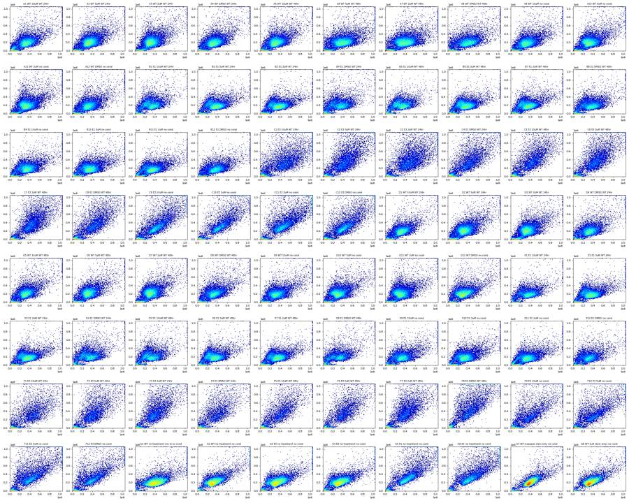
25
agent
E3 wells (rows C/F) have a distinctive broad diagonal FSC/SSC pattern. Notably G5/G6 (labelled E1) look E3-like and G3/G4 (labelled E3) look compact. Let me look closer.
26
tool call · Bash
cd /task/work; python3 scat.py fs A12,B12,C12,E12,F12,G2,G3,G4,G5,G6,B9,C9,E9,F9,A9,D9,G1,G7,G8,C11 && mv fs.png fs_sel.png
27
tool call · Read
{
"file_path": "/task/work/fs_sel.png"
}28
tool output
(Bash completed with no output)
29
tool output
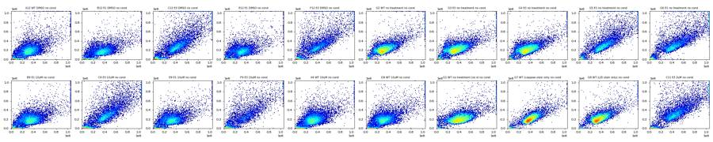
31
tool call · Bash
cd /task/work; python3 scat.py singlet A1,A12,B1,B12,C1,C12,E4,F8,G1,G5 && mv singlet.png singlet_sel.png; python3 scat.py fl
32
tool call · Read
{
"file_path": "/task/work/singlet_sel.png"
}33
tool call · Read
{
"file_path": "/task/work/fl.png"
}34
tool output
(Bash completed with no output)
35
tool output
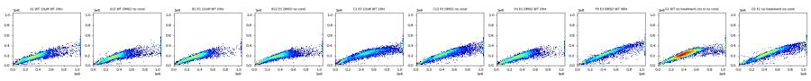
36
tool output
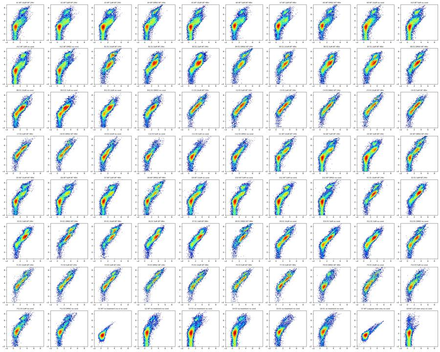
38
thinking
BL1 spills into BL2, as the G7 caspase-only control shows, so I'll estimate spillover from the single-stain controls before fixing the live/dead gate.
39
tool call · Bash
cd /task/work; cat > spill.py <<'EOF'
from load import *
import numpy as np
def basic(df):
m=(df['FSC-A']>100000)&(df['FSC-A']<1.0e6)&(df['SSC-A']<1.0e6)&(df['SSC-A']>20000)
return df[m]
_,g1=load('G1'); _,g7=load('G7'); _,g8=load('G8')
g1,g7,g8=basic(g1),basic(g7),basic(g8)
for c in ['BL1-A','BL2-A']:
print('G1',c,np.percentile(g1[c],[1,25,50,75,99,99.5,99.9]))
print('G7 BL1 pct',np.percentile(g7['BL1-A'],[50,90,95,99,99.9]))
print('G8 BL2 pct',np.percentile(g8['BL2-A'],[50,80,90,95,99]))
b1=np.median(g1['BL1-A']); b2=np.median(g1['BL2-A'])
# G7: BL1 bright events -> BL2/BL1
for lo,hi in [(5000,20000),(20000,60000),(60000,1e6),(3000,1e6)]:
m=(g7['BL1-A']>lo)&(g7['BL1-A']<hi)
x=g7['BL1-A'][m]-b1; y=g7['BL2-A'][m]-b2
print('G7 BL1 in',lo,hi,'n',m.sum(),'median ratio BL2/BL1',np.median(y/x), 'slope', np.polyfit(x,y,1))
for lo,hi in [(20000,80000),(80000,300000),(300000,1.1e6),(20000,1.1e6)]:
m=(g8['BL2-A']>lo)&(g8['BL2-A']<hi)
x=g8['BL2-A'][m]-b2; y=g8['BL1-A'][m]-b1
print('G8 BL2 in',lo,hi,'n',m.sum(),'median ratio BL1/BL2',np.median(y/x),'slope',np.polyfit(x,y,1))
EOF
python3 spill.py40
tool output (error)
Exit code 1
/usr/local/lib/python3.12/site-packages/numpy/core/fromnumeric.py:3504: RuntimeWarning: Mean of empty slice.
return _methods._mean(a, axis=axis, dtype=dtype,
/usr/local/lib/python3.12/site-packages/numpy/core/_methods.py:129: RuntimeWarning: invalid value encountered in scalar divide
ret = ret.dtype.type(ret / rcount)
G1 BL1-A [-93. 38. 93. 154. 393.98 483.97 796.588]
G1 BL2-A [ 7. 248. 370. 528. 1869.98 2463.93 4079.478]
G7 BL1 pct [ 139. 348. 773. 8901.96 21684.696]
G8 BL2 pct [ 556.5 1327. 2294.8 6585.8 74337.24]
G7 BL1 in 5000 20000 n 399 median ratio BL2/BL1 0.9021396001403017 slope [ 0.90537765 -1.80880988]
G7 BL1 in 20000 60000 n 29 median ratio BL2/BL1 0.9125933230032399 slope [ 9.97766822e-01 -1.84916499e+03]
Traceback (most recent call last):
File "/task/work/spill.py", line 17, in <module>
print('G7 BL1 in',lo,hi,'n',m.sum(),'median ratio BL2/BL1',np.median(y/x), 'slope', np.polyfit(x,y,1))
^^^^^^^^^^^^^^^^^
File "/usr/local/lib/python3.12/site-packages/numpy/lib/polynomial.py", line 639, in polyfit
raise TypeError("expected non-empty vector for x")
TypeError: expected non-empty vector for x42
tool call · Bash
cd /task/work; sed -i 's/for lo,hi in \[(5000,20000),(20000,60000),(60000,1e6),(3000,1e6)\]/for lo,hi in [(3000,8000),(8000,20000),(20000,60000),(3000,1e6)]/' spill.py; python3 spill.py
43
tool output
G1 BL1-A [-93. 38. 93. 154. 393.98 483.97 796.588] G1 BL2-A [ 7. 248. 370. 528. 1869.98 2463.93 4079.478] G7 BL1 pct [ 139. 348. 773. 8901.96 21684.696] G8 BL2 pct [ 556.5 1327. 2294.8 6585.8 74337.24] G7 BL1 in 3000 8000 n 355 median ratio BL2/BL1 0.8956672945949863 slope [ 0.86823134 226.88619504] G7 BL1 in 8000 20000 n 238 median ratio BL2/BL1 0.9073808490195077 slope [ 0.9083906 -37.45292099] G7 BL1 in 20000 60000 n 29 median ratio BL2/BL1 0.9125933230032399 slope [ 9.97766822e-01 -1.84916499e+03] G7 BL1 in 3000 1000000.0 n 622 median ratio BL2/BL1 0.9028803450985312 slope [ 0.91609961 -43.12131294] G8 BL2 in 20000 80000 n 543 median ratio BL1/BL2 0.0007729440417681459 slope [-3.91457969e-04 8.06166060e+01] G8 BL2 in 80000 300000 n 190 median ratio BL1/BL2 0.0003510360852729162 slope [-3.82325602e-06 6.31491884e+01] G8 BL2 in 300000 1100000.0 n 11 median ratio BL1/BL2 0.0003078727934432817 slope [ 2.15094042e-03 -5.20126969e+02] G8 BL2 in 20000 1100000.0 n 744 median ratio BL1/BL2 0.0005510786169195092 slope [1.96007112e-04 5.15464740e+01]
45
thinking
Spillover from BL1 into BL2 is about 0.90 and the reverse is near zero, which is too large to leave uncorrected, so I'm building a custom compensation matrix and checking the debris and singlet gates next.
46
tool call · Bash
cd /task/work; cat > comp_view.py <<'EOF'
import matplotlib; matplotlib.use('Agg')
import matplotlib.pyplot as plt, numpy as np, sys
from load import *
S=0.90
wells=sys.argv[1].split(',')
fig,axs=plt.subplots(len(wells),4,figsize=(16,3.6*len(wells)),squeeze=False)
def asinh(x,c=150): return np.arcsinh(x/c)
for row,w in zip(axs,wells):
s,df=load(w)
bl1=df['BL1-A']-0.0005*df['BL2-A']; bl2=df['BL2-A']-S*df['BL1-A']
row[0].hist2d(np.log10(np.clip(df['FSC-A'],1e3,None)),np.log10(np.clip(df['SSC-A'],1e3,None)),bins=150,range=[[3.5,6.1],[3,6.1]],cmap='jet',cmin=1,norm=matplotlib.colors.LogNorm())
row[1].hist2d(df['FSC-A'],df['FSC-H'],bins=150,range=[[0,1.05e6],[0,6e5]],cmap='jet',cmin=1,norm=matplotlib.colors.LogNorm())
m=(df['FSC-A']>100000)&(df['FSC-A']<1.03e6)&(df['SSC-A']<1.03e6)
row[2].hist2d(asinh(bl1[m]),asinh(bl2[m]),bins=150,range=[[-3,8],[-3,9]],cmap='jet',cmin=1,norm=matplotlib.colors.LogNorm())
live=m&(bl2<15000)
row[3].hist(asinh(bl1[live]),bins=200,range=(-3,8),histtype='step',color='g')
row[3].set_yscale('log')
for a in row: a.set_title(w+' '+lay.set_index('well').loc[w,'sample'][:25]+' '+lay.set_index('well').loc[w,'conditioned_media'][:7],fontsize=9)
plt.tight_layout(); plt.savefig(sys.argv[2],dpi=55)
EOF
python3 comp_view.py G1,G7,G8,A12,B12,C12,B4,E4 cv1.png47
tool call · Read
{
"file_path": "/task/work/cv1.png"
}48
tool output
(Bash completed with no output)
49
tool output
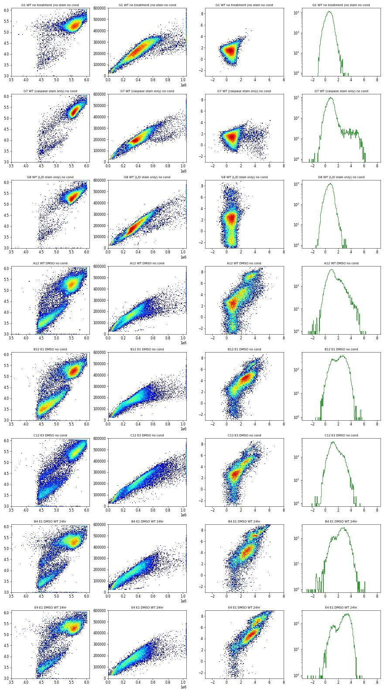
51
thinking
Compensation fixes the caspase-only control, but double-stained wells still show a diagonal and a bright SYTOX+ dead cluster. Next I'll check where dead and caspase+ events sit on FSC/SSC so the cell gate doesn't drop shrunken apoptotic cells.
52
tool call · Bash
cd /task/work; cat > pop_fs.py <<'EOF'
import matplotlib; matplotlib.use('Agg')
import matplotlib.pyplot as plt, numpy as np, sys
from load import *
S=0.90
wells=sys.argv[1].split(',')
fig,axs=plt.subplots(len(wells),3,figsize=(13,3.8*len(wells)),squeeze=False)
L=lambda x: np.log10(np.clip(x,1e3,None))
for row,w in zip(axs,wells):
s,df=load(w)
bl1=df['BL1-A']; bl2=df['BL2-A']-S*bl1
dead=bl2>20000; casp=(~dead)&(bl1>800); neg=(~dead)&(bl1<300)
for a,m,t in zip(row,[neg,casp,dead],['casp-neg live','casp+ live','dead']):
a.hist2d(L(df['FSC-A']),L(df['SSC-A']),bins=120,range=[[3.5,6.1],[3,6.1]],cmap='Greys',cmin=1,norm=matplotlib.colors.LogNorm())
a.scatter(L(df['FSC-A'][m]),L(df['SSC-A'][m]),s=1,c='r',alpha=0.3)
a.set_title(f'{w} {t} n={m.sum()}',fontsize=9)
for v in [4.9,5.0]: a.axvline(v,color='b',lw=0.5)
a.axhline(4.5,color='b',lw=0.5)
plt.tight_layout(); plt.savefig(sys.argv[2],dpi=55)
EOF
python3 pop_fs.py A12,B4,C12,E4,F4 popfs.png53
tool call · Read
{
"file_path": "/task/work/popfs.png"
}54
tool output
(Bash completed with no output)
55
tool output
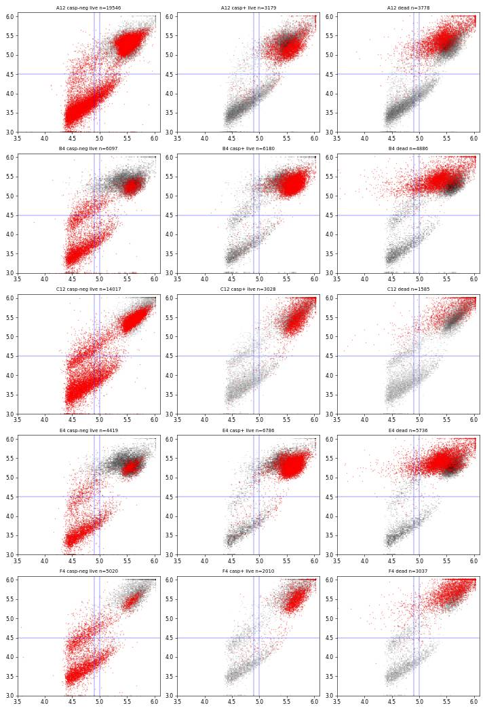
57
agent
Caspase+ and dead events sit in the main cell cluster; the low-SSC bands are SYTOX-/caspase- debris. Now the singlet discrimination.
58
tool call · Bash
cd /task/work; cat > singlet2.py <<'EOF'
import matplotlib; matplotlib.use('Agg')
import matplotlib.pyplot as plt, numpy as np, sys
from load import *
wells=sys.argv[1].split(',')
fig,axs=plt.subplots(len(wells),3,figsize=(13,3.6*len(wells)),squeeze=False)
for row,w in zip(axs,wells):
s,df=load(w)
m=(df['FSC-A']>70000)&(df['SSC-A']>45000)&(df['FSC-A']<1.04e6)&(df['SSC-A']<1.04e6)
d=df[m]
row[0].hist2d(d['FSC-A'],d['FSC-H'],bins=150,range=[[0,1.05e6],[0,6e5]],cmap='jet',cmin=1,norm=matplotlib.colors.LogNorm())
row[1].hist2d(d['FSC-A'],d['FSC-H']/d['FSC-A'],bins=150,range=[[0,1.05e6],[0.2,0.9]],cmap='jet',cmin=1,norm=matplotlib.colors.LogNorm())
row[2].hist2d(d['FSC-H'],d['FSC-W'],bins=150,range=[[0,6e5],[0,1024]],cmap='jet',cmin=1,norm=matplotlib.colors.LogNorm())
row[0].set_title(w)
plt.tight_layout(); plt.savefig(sys.argv[2],dpi=55)
EOF
python3 singlet2.py G1,A12,B4,C12,F8,G6 sing2.png59
tool call · Read
{
"file_path": "/task/work/sing2.png"
}60
tool output
(Bash completed with no output)
61
tool output
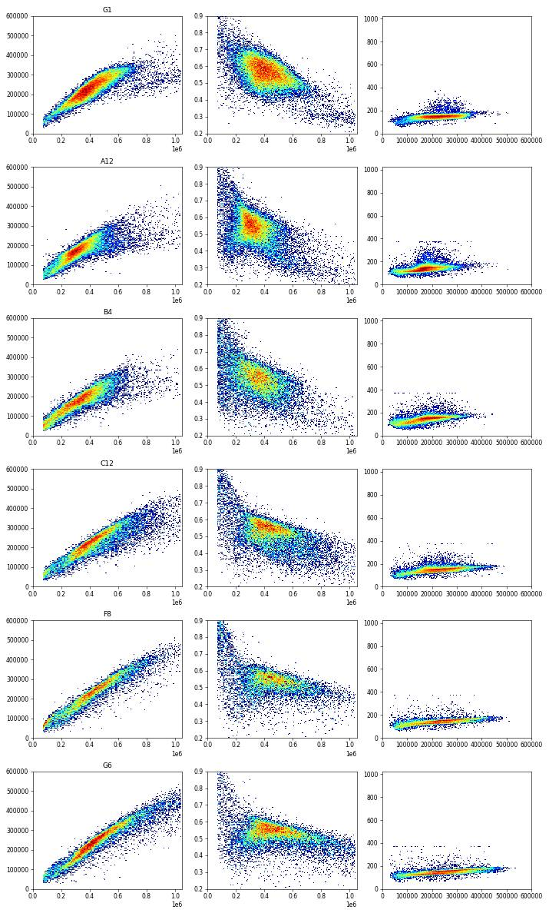
63
agent
Singlet band is clear on FSC-A vs FSC-H (doublets form the lower arm). Let me check the FlowKit 1.2.3 API for matrices/transforms.
64
tool call · Bash
cd /task/work; python3 -c "
import flowkit as fk, inspect
print(fk.__version__)
print(inspect.signature(fk.Matrix.__init__))
print(inspect.signature(fk.transforms.LogicleTransform.__init__))
print(inspect.signature(fk.transforms.AsinhTransform.__init__))
print(inspect.signature(fk.GatingStrategy.add_gate))
print(inspect.signature(fk.GatingStrategy.add_transform))
print(inspect.signature(fk.GatingStrategy.add_comp_matrix))
print(inspect.signature(fk.gates.PolygonGate.__init__))
print(inspect.signature(fk.gates.RectangleGate.__init__))
print(inspect.signature(fk.Dimension.__init__))
print(inspect.signature(fk.GatingStrategy.gate_sample))
print([m for m in dir(fk.GatingStrategy) if not m.startswith('_')])
"65
tool output
1.2.3 (self, spill_data_or_file, detectors, fluorochromes=None, null_channels=None) (self, param_t, param_w, param_m, param_a) (self, param_t, param_m, param_a) (self, gate, gate_path, sample_id=None) (self, transform_id, transform) (self, matrix_id, matrix) (self, gate_name, dimensions, vertices, use_complement=False) (self, gate_name, dimensions, use_complement=False) (self, dimension_id, compensation_ref='uncompensated', transformation_ref=None, range_min=None, range_max=None) (self, sample, cache_events=False, verbose=False) ['add_comp_matrix', 'add_gate', 'add_transform', 'clear_cache', 'export_gate_hierarchy_image', 'find_matching_gate_paths', 'gate_sample', 'get_child_gate_ids', 'get_comp_matrix', 'get_gate', 'get_gate_hierarchy', 'get_gate_ids', 'get_max_depth', 'get_parent_gate_id', 'get_root_gates', 'get_transform', 'is_custom_gate', 'remove_gate', 'rename_gate', 'resolver']
67
tool call · Bash
cd /task/work; cat > common.py <<'EOF'
import flowkit as fk, numpy as np, pandas as pd
lay=pd.read_csv('/task/inputs/plate_layout.csv')
SPILL=np.array([[1.0,0.90],[0.0005,1.0]])
def make_matrix():
return fk.Matrix(SPILL, ['BL1-A','BL2-A'], fluorochromes=['CellEvent_Casp37','SYTOX_AADvanced'])
LOGICLE=fk.transforms.LogicleTransform(param_t=1048576, param_w=1.0, param_m=5.5, param_a=0)
def sample(well):
f=lay.set_index('well').loc[well,'file']
return fk.Sample('/task/inputs/raw/'+f)
def comp_df(well):
s=sample(well)
s.apply_compensation(make_matrix())
raw=s.as_dataframe(source='raw'); raw.columns=[c[0] for c in raw.columns]
comp=s.as_dataframe(source='comp'); comp.columns=[c[0] for c in comp.columns]
out=raw.copy()
out['cBL1']=comp['BL1-A']; out['cBL2']=comp['BL2-A']
out['tBL1']=LOGICLE.apply(out['cBL1'].values); out['tBL2']=LOGICLE.apply(out['cBL2'].values)
return out
def inv(t): return LOGICLE.inverse(np.atleast_1d(np.array(t,dtype=float)))
EOF
python3 -c "
from common import *
print(inv([0,0.1,0.2,0.3,0.4,0.5,0.6,0.7,0.8,0.9,1.0]))
print(LOGICLE.apply(np.array([0.,-1000,100,500,1000,5000,20000,1e5])))
"68
tool output
[-5.42698974e+02 -1.87007663e+02 3.95290649e+01 2.88617656e+02 7.71218531e+02 2.18747047e+03 6.99401758e+03 2.38870363e+04 8.37067246e+04 2.95867165e+05 1.04857600e+06] [ 0.18181818 -0.06250286 0.22724061 0.35509387 0.42613922 0.57190875 0.68571985 0.81411088]
70
tool call · Bash
cd /task/work; cat > fl2.py <<'EOF'
import matplotlib; matplotlib.use('Agg')
import matplotlib.pyplot as plt, numpy as np, sys
from common import *
from matplotlib.path import Path
CELLS=[(70000,1040000),(70000,120000),(150000,45000),(1040000,45000),(1040000,1040000)]
SING=[(70000,29000),(300000,126000),(500000,200000),(700000,266000),(1040000,375000),(1040000,620000),(70000,100000)]
def ingate(x,y,poly): return Path(poly).contains_points(np.c_[x,y])
wells=sys.argv[1].split(',') if sys.argv[1]!='all' else list(lay.well)
nc=10 if len(wells)>10 else len(wells); nr=int(np.ceil(len(wells)/nc))
fig,axs=plt.subplots(nr,nc,figsize=(3.2*nc,3.2*nr),squeeze=False)
for a,w in zip(axs.flat,wells):
d=comp_df(w)
m=ingate(d['FSC-A'],d['SSC-A'],CELLS)&ingate(d['FSC-A'],d['FSC-H'],SING)
a.hist2d(d['tBL1'][m],d['tBL2'][m],bins=140,range=[[0,0.85],[0,0.95]],cmap='jet',cmin=1,norm=matplotlib.colors.LogNorm())
for v in [0.4,0.45]: a.axvline(v,color='k',lw=0.4)
for v in [0.62,0.66]: a.axhline(v,color='k',lw=0.4)
a.set_title(w+' '+lay.set_index('well').loc[w,'sample'][:20]+' '+lay.set_index('well').loc[w,'conditioned_media'][:7],fontsize=8)
plt.tight_layout(); plt.savefig(sys.argv[2],dpi=int(sys.argv[3]) if len(sys.argv)>3 else 55)
EOF
python3 fl2.py all fl2_all.png 4571
tool call · Read
{
"file_path": "/task/work/fl2_all.png"
}72
tool output
(Bash completed with no output)
73
tool output
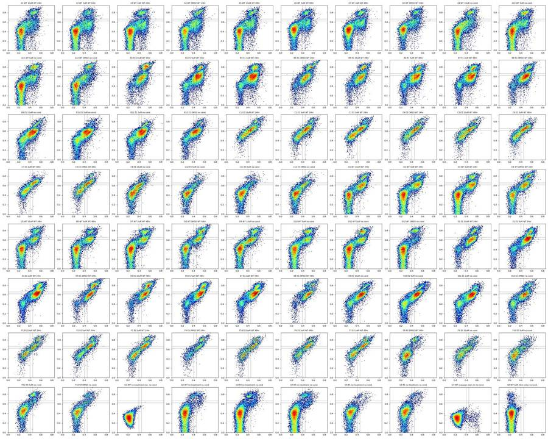
75
thinking
The compensated view shows three WT clusters and E1 bulk at caspase+/SYTOX-dim, with E3 spread along the diagonal. I'm checking 1-D histograms to set the thresholds.
76
tool call · Bash
cd /task/work; cat > hist1d.py <<'EOF'
import matplotlib; matplotlib.use('Agg')
import matplotlib.pyplot as plt, numpy as np, sys
from common import *
from matplotlib.path import Path
CELLS=[(70000,1040000),(70000,120000),(150000,45000),(1040000,45000),(1040000,1040000)]
SING=[(70000,29000),(300000,126000),(500000,200000),(700000,266000),(1040000,375000),(1040000,620000),(70000,100000)]
def ingate(x,y,poly): return Path(poly).contains_points(np.c_[x,y])
groups={'WT':['A12','D12','A9','D9','G2'],'E1':['B12','E12','B9','E9'],'E3':['C12','F12','C9','F9'],'E1CM':['B4','E4','B8','E8'],'ctrl':['G1','G7','G8'],'Gq':['G3','G4','G5','G6']}
fig,axs=plt.subplots(2,len(groups),figsize=(5*len(groups),8))
for j,(g,ws) in enumerate(groups.items()):
for w in ws:
d=comp_df(w)
m=ingate(d['FSC-A'],d['SSC-A'],CELLS)&ingate(d['FSC-A'],d['FSC-H'],SING)
axs[0,j].hist(d['tBL2'][m],bins=200,range=(0,1),histtype='step',density=True,label=w)
live=m&(d['tBL2']<0.70)
axs[1,j].hist(d['tBL1'][live],bins=200,range=(0,0.9),histtype='step',density=True,label=w)
axs[0,j].set_title(g+' BL2 comp (singlets)'); axs[1,j].set_title(g+' BL1 comp (BL2<0.70)')
for a in axs[:,j]: a.legend(fontsize=7); a.set_yscale('log'); a.set_ylim(1e-2,None)
for v in [0.66,0.70]: axs[0,j].axvline(v,color='k',lw=0.5)
for v in [0.38,0.40,0.42]: axs[1,j].axvline(v,color='k',lw=0.5)
plt.tight_layout(); plt.savefig('hist1d.png',dpi=55)
EOF
python3 hist1d.py77
tool output
(Bash completed with no output)
78
tool call · Read
{
"file_path": "/task/work/hist1d.png"
}79
tool output
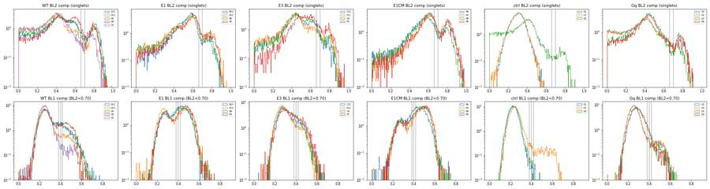
81
thinking
The BL2 valley sits near 0.70, and on BL1 the valleys in WT and E1 fall around 0.36–0.38. I'm using the negative controls to pin the threshold.
82
tool call · Bash
cd /task/work; cat > thr.py <<'EOF'
from common import *
from matplotlib.path import Path
CELLS=[(70000,1040000),(70000,120000),(150000,45000),(1040000,45000),(1040000,1040000)]
SING=[(70000,29000),(300000,126000),(500000,200000),(700000,266000),(1040000,375000),(1040000,620000),(70000,100000)]
def ingate(x,y,poly): return Path(poly).contains_points(np.c_[x,y])
for w in ['G1','G8','G7','A12','D12','G2','B12','E12','C12','F12','B4','E4']:
d=comp_df(w)
m=ingate(d['FSC-A'],d['SSC-A'],CELLS)&ingate(d['FSC-A'],d['FSC-H'],SING)
live=m&(d['tBL2']<0.70)
t=d['tBL1'][live]
print(w, 'n_live',live.sum(),'pcts99/99.5/99.9', np.round(np.percentile(t,[99,99.5,99.9]),3), ' %pos at', {th:round(100*(t>=th).mean(),1) for th in [0.36,0.38,0.40,0.42]})
print('t->value', {t:round(float(inv(t)[0])) for t in [0.36,0.37,0.38,0.40,0.42,0.70]})
EOF
python3 thr.py83
tool output
G1 n_live 23730 pcts99/99.5/99.9 [0.323 0.343 0.402] %pos at {0.36: 0.3, 0.38: 0.2, 0.4: 0.1, 0.42: 0.1}
G8 n_live 21318 pcts99/99.5/99.9 [0.334 0.358 0.406] %pos at {0.36: 0.5, 0.38: 0.2, 0.4: 0.1, 0.42: 0.0}
G7 n_live 21177 pcts99/99.5/99.9 [0.579 0.61 0.642] %pos at {0.36: 4.8, 0.38: 4.3, 0.4: 3.7, 0.42: 3.4}
A12 n_live 14500 pcts99/99.5/99.9 [0.579 0.605 0.657] %pos at {0.36: 24.5, 0.38: 20.8, 0.4: 17.4, 0.42: 13.7}
D12 n_live 19262 pcts99/99.5/99.9 [0.523 0.544 0.573] %pos at {0.36: 10.1, 0.38: 8.9, 0.4: 7.7, 0.42: 6.5}
G2 n_live 20052 pcts99/99.5/99.9 [0.504 0.535 0.569] %pos at {0.36: 4.1, 0.38: 3.3, 0.4: 2.8, 0.42: 2.3}
B12 n_live 12932 pcts99/99.5/99.9 [0.558 0.575 0.613] %pos at {0.36: 67.0, 0.38: 60.6, 0.4: 52.6, 0.42: 43.8}
E12 n_live 10605 pcts99/99.5/99.9 [0.58 0.596 0.647] %pos at {0.36: 55.7, 0.38: 52.8, 0.4: 49.1, 0.42: 44.1}
C12 n_live 11707 pcts99/99.5/99.9 [0.537 0.559 0.597] %pos at {0.36: 26.1, 0.38: 21.9, 0.4: 17.8, 0.42: 14.5}
F12 n_live 8397 pcts99/99.5/99.9 [0.52 0.537 0.578] %pos at {0.36: 18.1, 0.38: 14.3, 0.4: 11.7, 0.42: 9.3}
B4 n_live 8989 pcts99/99.5/99.9 [0.585 0.603 0.653] %pos at {0.36: 75.8, 0.38: 70.7, 0.4: 63.5, 0.42: 54.5}
E4 n_live 7977 pcts99/99.5/99.9 [0.599 0.607 0.631] %pos at {0.36: 82.3, 0.38: 80.2, 0.4: 76.8, 0.42: 72.1}
t->value {0.36: 524, 0.37: 577, 0.38: 635, 0.4: 771, 0.42: 940, 0.7: 23887}85
agent
Threshold 0.38 (≈635 compensated units) puts unstained G1 and SYTOX-only G8 at 0.2% positive. Now I'll build the FlowKit strategy, export, reload, and gate all 80 files from the reloaded XML.
86
tool call · Bash
cd /task/work; cat > build_gates.py <<'EOF'
import flowkit as fk, numpy as np, pandas as pd
from common import SPILL, lay
MID='spill_casp_sytox'
CELLS=[(70000,1040000),(70000,120000),(150000,45000),(1040000,45000),(1040000,1040000)]
SING=[(70000,29000),(300000,126000),(500000,200000),(700000,266000),(1040000,375000),(1040000,620000),(70000,100000)]
LIVE_MAX=0.70 # logicle units on compensated BL2-A (SYTOX AADvanced)
CASP_MIN=0.38 # logicle units on compensated BL1-A (CellEvent caspase-3/7)
def build():
g=fk.GatingStrategy()
g.add_comp_matrix(MID, fk.Matrix(SPILL,['BL1-A','BL2-A'],fluorochromes=['CellEvent_Casp37','SYTOX_AADvanced']))
g.add_transform('logicle', fk.transforms.LogicleTransform(param_t=1048576, param_w=1.0, param_m=5.5, param_a=0))
fsc=fk.Dimension('FSC-A',compensation_ref='uncompensated')
ssc=fk.Dimension('SSC-A',compensation_ref='uncompensated')
fsch=fk.Dimension('FSC-H',compensation_ref='uncompensated')
g.add_gate(fk.gates.PolygonGate('cells',[fsc,ssc],CELLS),('root',))
g.add_gate(fk.gates.PolygonGate('singlets',[fsc,fsch],SING),('root','cells'))
bl2_live=fk.Dimension('BL2-A',compensation_ref=MID,transformation_ref='logicle',range_max=LIVE_MAX)
bl2_dead=fk.Dimension('BL2-A',compensation_ref=MID,transformation_ref='logicle',range_min=LIVE_MAX)
bl1_pos=fk.Dimension('BL1-A',compensation_ref=MID,transformation_ref='logicle',range_min=CASP_MIN)
g.add_gate(fk.gates.RectangleGate('live',[bl2_live]),('root','cells','singlets'))
g.add_gate(fk.gates.RectangleGate('caspase_pos',[bl1_pos]),('root','cells','singlets','live'))
g.add_gate(fk.gates.RectangleGate('dead',[bl2_dead]),('root','cells','singlets'))
g.add_gate(fk.gates.RectangleGate('dead_caspase_pos',[fk.Dimension('BL1-A',compensation_ref=MID,transformation_ref='logicle',range_min=CASP_MIN)]),('root','cells','singlets','dead'))
return g
if __name__=='__main__':
g=build()
with open('/task/outputs/gates.xml','wb') as fh: fk.export_gatingml(g,fh)
g2=fk.parse_gating_xml('/task/outputs/gates.xml')
print(g2.get_gate_hierarchy(output='ascii'))
EOF
python3 build_gates.py87
tool output
root
╰── cells
╰── singlets
├── live
│ ╰── caspase_pos
╰── dead
╰── dead_caspase_pos89
tool call · Bash
cd /task/work; cat > run_counts.py <<'EOF'
import flowkit as fk, pandas as pd, numpy as np
lay=pd.read_csv('/task/inputs/plate_layout.csv')
g=fk.parse_gating_xml('/task/outputs/gates.xml')
ROLE={'cells':'cells','singlets':'singlets','live':'live','caspase_pos':'marker_positive','dead':'other','dead_caspase_pos':'other'}
ORDER=['all_events','cells','singlets','live','caspase_pos','dead','dead_caspase_pos']
rows=[]
for _,r in lay.iterrows():
s=fk.Sample('/task/inputs/raw/'+r.file)
res=g.gate_sample(s)
rep=res.report
cnt={'all_events':s.event_count}; par={'all_events':'none'}
for _,q in rep.iterrows():
cnt[q['gate_name']]=int(q['count'])
p=q['gate_path'][-1]; par[q['gate_name']]='all_events' if p=='root' else p
for pop in ORDER:
c=cnt[pop]; p=par[pop]
pct='' if pop=='all_events' else round(100*c/cnt[p],4) if cnt[p]>0 else ''
rows.append(dict(file=r.file,well=r.well,population=pop,role=ROLE.get(pop,'other'),parent=p,count=c,pct_of_parent=pct))
out=pd.DataFrame(rows)
out.to_csv('/task/outputs/counts.csv',index=False)
w=out.pivot(index='well',columns='population',values='count')
w=w.loc[lay.well]
print(w.to_string())
EOF
python3 run_counts.py90
tool output
population all_events caspase_pos cells dead dead_caspase_pos live singlets well A1 31328 3278 20220 2185 2048 16348 18533 A2 40169 5408 28283 2204 2042 23486 25690 A3 47337 5990 31083 2655 2379 25534 28189 A4 33079 5598 23435 2744 2676 18525 21269 A5 34963 4899 24631 2354 2261 20010 22364 A6 33431 4723 24804 1998 1885 20750 22748 A7 36445 4917 27214 2354 2257 22608 24962 A8 22867 3250 16978 2000 1944 13575 15575 A9 40034 3989 24203 2301 2231 19391 21692 A10 42298 4245 28414 3123 3006 22740 25863 A11 43376 4550 28233 3323 3202 22549 25872 A12 30724 3020 19120 2368 2330 14500 16868 B1 18757 6393 14164 3836 3827 9034 12870 B2 32477 12655 22894 3083 3071 17847 20930 B3 40067 15565 26849 3952 3933 20434 24386 B4 19965 6359 13654 3008 3003 8989 11997 B5 17852 7033 14046 3047 3045 9854 12901 B6 31705 12446 22600 3246 3239 17337 20583 B7 35417 13415 24139 4130 4113 18035 22165 B8 26222 9484 17051 2300 2300 12687 14987 B9 34411 10235 21991 1378 1378 18389 19767 B10 40098 12487 25536 912 911 22030 22942 B11 41005 13080 24153 1468 1468 20372 21840 B12 31680 7842 16141 1091 1088 12932 14023 C1 17681 4019 10509 1557 1554 7405 8962 C2 25455 5233 12718 1555 1548 9178 10733 C3 21098 4420 12473 1522 1509 9447 10969 C4 18113 3592 9611 1253 1253 6482 7735 C5 18729 3201 9583 1104 1104 6611 7715 C6 21716 4135 11064 1194 1192 7981 9175 C7 22874 4087 11941 1003 998 9298 10301 C8 18604 3060 9834 1154 1153 6806 7960 C9 22962 2554 13628 773 763 11352 12125 C10 15794 1391 10164 404 387 8886 9290 C11 19854 1612 13118 449 421 11724 12173 C12 23104 2564 13686 544 528 11707 12251 D1 29965 5655 19686 1943 1936 16366 18309 D2 42557 6417 28830 2269 2247 24221 26490 D3 44711 7218 29536 2548 2511 24544 27092 D4 26104 4830 17901 2607 2599 13439 16046 D5 28348 3930 19098 2140 2122 15211 17351 D6 32268 4589 22121 1774 1752 18284 20058 D7 38003 5048 26079 2699 2641 21365 24064 D8 27787 3890 17416 2968 2950 12505 15473 D9 35585 4466 20929 2269 2258 16216 18485 D10 38425 4363 25760 2916 2891 20731 23647 D11 43319 4771 28381 3446 3433 22775 26221 D12 28999 1707 23335 2326 2248 19262 21588 E1 18885 6871 13285 2318 2315 9519 11837 E2 35801 14212 24171 3468 3465 18435 21903 E3 39231 14859 25868 4258 4253 19068 23326 E4 18739 6398 13678 3732 3732 7977 11709 E5 18850 5987 13698 3720 3720 8096 11816 E6 32342 12197 22048 4198 4195 16066 20264 E7 38310 14739 24400 3233 3233 19067 22300 E8 15706 5405 10707 2155 2153 6985 9140 E9 29597 8320 17259 1708 1707 13255 14963 E10 41604 12247 25214 1846 1846 20687 22533 E11 43387 13896 24141 1375 1375 20277 21652 E12 26670 5595 13844 1523 1521 10605 12128 F1 11614 1871 6571 1365 1359 4430 5795 F2 18268 2982 8490 1786 1779 5599 7385 F3 19551 2963 10096 2071 2054 6924 8995 F4 11834 1836 6034 1570 1566 3494 5064 F5 14031 1967 6943 1274 1269 4495 5769 F6 14662 2155 7098 1529 1527 4484 6013 F7 19376 2685 9767 2209 2201 6281 8490 F8 13717 703 9223 1445 1394 7184 8629 F9 16566 1630 7482 932 925 5383 6315 F10 16796 1393 … [887 more characters not shown]
92
agent
Counts from the reloaded XML match my independent numpy check (e.g. G1 live = 23,730). Now the per-well metrics laid out by design.
93
tool call · Bash
cd /task/work; cat > metrics.py <<'EOF'
import pandas as pd, numpy as np
lay=pd.read_csv('/task/inputs/plate_layout.csv')
c=pd.read_csv('/task/outputs/counts.csv')
w=c.pivot(index='well',columns='population',values='count').loc[lay.well]
m=pd.DataFrame(index=w.index)
m['casp_of_live']=100*w.caspase_pos/w.live
m['dead_of_sing']=100*w.dead/w.singlets
m['casp_total_of_sing']=100*(w.caspase_pos+w.dead_caspase_pos)/w.singlets
m['sing_of_all']=100*w.singlets/w.all_events
m['live_n']=w.live
m=m.join(lay.set_index('well')[['cell_line','camptothecin','conditioned_media']])
m.to_csv('well_metrics.csv')
pd.set_option('display.width',200)
for met in ['casp_of_live','dead_of_sing','casp_total_of_sing']:
print('\n==',met)
grid=pd.DataFrame(index=list('ABCDEF'),columns=range(1,13))
for wl,v in m[met].items():
if wl[0] in 'ABCDEF': grid.loc[wl[0],int(wl[1:])]=round(v,1)
print(grid.to_string())
print(m.loc[[x for x in m.index if x[0]=='G']].round(1).to_string())
EOF
python3 metrics.py94
tool output
== casp_of_live
1 2 3 4 5 6 7 8 9 10 11 12
A 20.1 23.0 23.5 30.2 24.5 22.8 21.7 23.9 20.6 18.7 20.2 20.8
B 70.8 70.9 76.2 70.7 71.4 71.8 74.4 74.8 55.7 56.7 64.2 60.6
C 54.3 57.0 46.8 55.4 48.4 51.8 44.0 45.0 22.5 15.7 13.7 21.9
D 34.6 26.5 29.4 35.9 25.8 25.1 23.6 31.1 27.5 21.0 20.9 8.9
E 72.2 77.1 77.9 80.2 74.0 75.9 77.3 77.4 62.8 59.2 68.5 52.8
F 42.2 53.3 42.8 52.5 43.8 48.1 42.7 9.8 30.3 21.0 13.8 14.3
== dead_of_sing
1 2 3 4 5 6 7 8 9 10 11 12
A 11.8 8.6 9.4 12.9 10.5 8.8 9.4 12.8 10.6 12.1 12.8 14.0
B 29.8 14.7 16.2 25.1 23.6 15.8 18.6 15.3 7.0 4.0 6.7 7.8
C 17.4 14.5 13.9 16.2 14.3 13.0 9.7 14.5 6.4 4.3 3.7 4.4
D 10.6 8.6 9.4 16.2 12.3 8.8 11.2 19.2 12.3 12.3 13.1 10.8
E 19.6 15.8 18.3 31.9 31.5 20.7 14.5 23.6 11.4 8.2 6.4 12.6
F 23.6 24.2 23.0 31.0 22.1 25.4 26.0 16.7 14.8 11.8 13.9 10.5
== casp_total_of_sing
1 2 3 4 5 6 7 8 9 10 11 12
A 28.7 29.0 29.7 38.9 32.0 29.0 28.7 33.3 28.7 28.0 30.0 31.7
B 79.4 75.1 80.0 78.0 78.1 76.2 79.1 78.6 58.7 58.4 66.6 63.7
C 62.2 63.2 54.1 62.6 55.8 58.1 49.4 52.9 27.4 19.1 16.7 25.2
D 41.5 32.7 35.9 46.3 34.9 31.6 32.0 44.2 36.4 30.7 31.3 18.3
E 77.6 80.7 81.9 86.5 82.2 80.9 80.6 82.7 67.0 62.5 70.5 58.7
F 55.7 64.5 55.8 67.2 56.1 61.2 57.6 24.3 40.5 30.2 25.6 23.1
casp_of_live dead_of_sing casp_total_of_sing sing_of_all live_n cell_line camptothecin conditioned_media
well
G1 0.2 0.0 0.2 90.5 23730 WT no treatment no conditioned media
G2 3.3 5.8 7.6 86.4 20052 WT no treatment no conditioned media
G3 5.2 6.7 10.9 83.5 27949 E3 no treatment no conditioned media
G4 5.5 6.6 11.3 83.2 26586 E3 no treatment no conditioned media
G5 6.4 3.0 9.0 72.6 11227 E1 no treatment no conditioned media
G6 5.7 5.5 10.5 74.1 11740 E1 no treatment no conditioned media
G7 4.3 0.0 4.3 88.2 21177 WT not stated no conditioned media
G8 0.2 2.3 0.2 89.7 21318 WT not stated no conditioned media96
thinking
CM raises caspase activity in every line rather than lowering it, and well F8 is a clear outlier at 9.8% against 42–57% for the other E3+CM wells. I'm now quantifying cell-line fingerprints to test the suspected G3–G6 identity problem and look at F8.
97
tool call · Bash
cd /task/work; cat > fingerprint.py <<'EOF'
from common import *
from matplotlib.path import Path
CELLS=[(70000,1040000),(70000,120000),(150000,45000),(1040000,45000),(1040000,1040000)]
SING=[(70000,29000),(300000,126000),(500000,200000),(700000,266000),(1040000,375000),(1040000,620000),(70000,100000)]
def ingate(x,y,poly): return Path(poly).contains_points(np.c_[x,y])
rows=[]
for w in lay.well:
d=comp_df(w)
m=ingate(d['FSC-A'],d['SSC-A'],CELLS)&ingate(d['FSC-A'],d['FSC-H'],SING)
live=m&(d['tBL2']<0.70); neg=live&(d['tBL1']<0.38)
lf=np.log10(d['FSC-A'][m]); ls=np.log10(d['SSC-A'][m])
rows.append(dict(well=w,
logFSC=np.median(lf),logSSC=np.median(ls),
SSCiqr=np.subtract(*np.percentile(ls,[75,25])),
ss_fs_slope=np.polyfit(lf,ls,1)[0],
pct_SSCgt500k=100*(d['SSC-A'][m]>5e5).mean(),
hiSSC_all=100*(d['SSC-A']>1.04e6).mean(),
negBL1=np.median(d['tBL1'][neg]),negBL2=np.median(d['tBL2'][neg]),
liveBL1=np.median(d['tBL1'][live])))
f=pd.DataFrame(rows).set_index('well').join(lay.set_index('well')[['cell_line','camptothecin','conditioned_media']])
f.to_csv('fingerprint.csv')
pd.set_option('display.width',220)
f['grp']=f.cell_line+'_'+np.where(f.conditioned_media.str.startswith('no'),'noCM','CM')
print(f[f.index.str[0]!='G'].groupby('grp')[['logFSC','logSSC','SSCiqr','ss_fs_slope','pct_SSCgt500k','hiSSC_all','negBL1','negBL2','liveBL1']].agg(['mean','min','max']).round(3).T.to_string())
print(f.loc[['G1','G2','G3','G4','G5','G6','G7','G8','F8','C8','D12','A12']].round(3).to_string())
EOF
python3 fingerprint.py98
tool output
grp E1_CM E1_noCM E3_CM E3_noCM WT_CM WT_noCM
logFSC mean 5.528 5.517 5.631 5.631 5.521 5.494
min 5.500 5.493 5.592 5.589 5.487 5.479
max 5.548 5.543 5.680 5.671 5.600 5.507
logSSC mean 5.290 5.251 5.550 5.495 5.310 5.294
min 5.253 5.224 5.520 5.460 5.278 5.268
max 5.329 5.273 5.642 5.534 5.343 5.313
SSCiqr mean 0.207 0.216 0.301 0.283 0.211 0.215
min 0.187 0.202 0.281 0.254 0.201 0.194
max 0.226 0.230 0.320 0.338 0.229 0.238
ss_fs_slope mean 0.168 0.263 0.700 0.696 0.447 0.395
min 0.121 0.232 0.451 0.551 0.235 0.309
max 0.221 0.305 0.843 0.832 0.592 0.485
pct_SSCgt500k mean 1.231 0.977 25.076 18.555 2.254 2.141
min 0.502 0.586 20.397 14.921 1.781 1.826
max 2.238 1.443 39.414 21.334 2.954 2.448
hiSSC_all mean 0.352 0.318 4.105 5.076 0.909 0.879
min 0.091 0.134 3.335 3.566 0.617 0.656
max 1.146 0.645 9.084 6.150 1.613 1.331
negBL1 mean 0.291 0.285 0.310 0.283 0.252 0.253
min 0.276 0.270 0.299 0.271 0.246 0.248
max 0.314 0.297 0.314 0.293 0.260 0.259
negBL2 mean 0.419 0.410 0.480 0.434 0.376 0.363
min 0.396 0.392 0.465 0.408 0.353 0.338
max 0.453 0.447 0.503 0.475 0.426 0.395
liveBL1 mean 0.463 0.418 0.372 0.300 0.273 0.268
min 0.426 0.396 0.305 0.282 0.263 0.253
max 0.499 0.461 0.404 0.325 0.289 0.283
logFSC logSSC SSCiqr ss_fs_slope pct_SSCgt500k hiSSC_all negBL1 negBL2 liveBL1 cell_line camptothecin conditioned_media grp
well
G1 5.606 5.305 0.187 0.379 1.365 1.064 0.224 0.301 0.224 WT no treatment no conditioned media WT_noCM
G2 5.492 5.311 0.188 0.516 1.625 1.412 0.245 0.354 0.247 WT no treatment no conditioned media WT_noCM
G3 5.515 5.310 0.184 0.396 0.688 0.546 0.254 0.341 0.257 E3 no treatment no conditioned media E3_noCM
G4 5.517 5.309 0.184 0.437 0.762 0.544 0.255 0.338 0.258 E3 no treatment no conditioned media E3_noCM
G5 5.660 5.505 0.252 0.773 17.323 6.215 0.276 0.401 0.280 E1 no treatment no conditioned media E1_noCM
G6 5.660 5.511 0.257 0.700 18.484 6.760 0.279 0.413 0.282 E1 no treatment no conditioned media E1_noCM
G7 5.590 5.297 0.181 0.992 1.521 1.091 0.240 0.298 0.242 WT not stated no conditioned media WT_noCM
G8 5.540 5.311 0.188 0.708 1.746 1.102 0.231 0.337 0.231 WT not stated no conditioned media WT_noCM
F8 5.645 5.642 0.283 0.752 39.414 9.084 0.299 0.466 0.305 E3 DMSO WT 48hr conditioned media E3_CM
C8 5.636 5.544 0.302 0.747 23.819 3.752 0.310 0.477 0.365 E3 DMSO WT 48hr conditioned media E3_CM
D12 5.485 5.313 0.194 0.327 2.302 1.331 0.248 0.338 0.253 WT DMSO no conditioned media WT_noCM
A12 5.497 5.276 0.238 0.445 2.170 0.915 0.254 0.383 0.271 WT DMSO no conditioned media WT_noCM100
thinking
Morphology markers show E3 signatures in G5/G6 (labelled E1) and their absence in G3/G4 (labelled E3). Next I'll screen for clogs, drift and saturation, and look more closely at F8.
101
tool call · Bash
cd /task/work; cat > qc.py <<'EOF'
from common import *
from matplotlib.path import Path
CELLS=[(70000,1040000),(70000,120000),(150000,45000),(1040000,45000),(1040000,1040000)]
SING=[(70000,29000),(300000,126000),(500000,200000),(700000,266000),(1040000,375000),(1040000,620000),(70000,100000)]
def ingate(x,y,poly): return Path(poly).contains_points(np.c_[x,y])
rows=[]
for w in lay.well:
s=sample(w); md=s.get_metadata()
d=comp_df(w)
t=d['Time'].values
T=t.max()
# 0.5 s bins over full run excluding last partial bin
bins=np.arange(0,np.floor(T*2)/2+1e-9,0.5)
h,_=np.histogram(t,bins=bins)
gaps=np.diff(np.sort(t))
m=ingate(d['FSC-A'],d['SSC-A'],CELLS)&ingate(d['FSC-A'],d['FSC-H'],SING)
thirds=np.array_split(np.argsort(t),3)
fsc_th=[np.median(d['FSC-A'].values[i]) for i in thirds]
ssc_th=[np.median(d['SSC-A'].values[i]) for i in thirds]
live=m&(d['tBL2']<0.70)
casp_th=[]
for i in thirds:
mm=np.zeros(len(d),bool); mm[i]=True; L=live&mm
casp_th.append(100*(d['tBL1'][L]>=0.38).mean())
sat=(d['FSC-A']>=1.04e6)|(d['SSC-A']>=1.04e6)
# caspase+ among saturated (by fluorescence) vs gated
satlive=sat&(d['tBL2']<0.70)
rows.append(dict(well=w,n=len(d),T=round(T,2),vol=int(md['vol']),rate_cv=round(h.std()/h.mean(),3),min_bin_rel=round(h.min()/np.median(h),2),
max_gap_s=round(gaps.max(),3),fsc_drift=round(fsc_th[2]/fsc_th[0],3),ssc_drift=round(ssc_th[2]/ssc_th[0],3),
casp_thirds='/'.join(f'{x:.1f}' for x in casp_th),pct_sat=round(100*sat.mean(),2),
casp_in_sat=round(100*(d['tBL1'][satlive]>=0.38).mean(),1) if satlive.sum()>20 else np.nan,
pct_cells=round(100*ingate(d['FSC-A'],d['SSC-A'],CELLS).mean(),1),pct_sing_of_cells=round(100*m.sum()/ingate(d['FSC-A'],d['SSC-A'],CELLS).sum(),1),
coinc=int(md['#coincidentcount'])))
q=pd.DataFrame(rows).set_index('well')
q.to_csv('qc.csv')
pd.set_option('display.width',250); pd.set_option('display.max_rows',200)
print(q.to_string())
print(q.describe().round(3).to_string())
EOF
python3 qc.py102
tool output
n T vol rate_cv min_bin_rel max_gap_s fsc_drift ssc_drift casp_thirds pct_sat casp_in_sat pct_cells pct_sing_of_cells coinc well A1 31328 15.98 133000 0.129 0.77 0.010 1.036 0.995 20.1/19.2/20.9 1.20 75.7 64.5 91.7 756 A2 40169 16.71 140000 0.135 0.81 0.006 1.017 1.025 23.4/23.0/22.7 0.96 88.9 70.4 90.8 936 A3 47337 16.85 142000 0.133 0.84 0.007 1.045 1.024 24.0/23.1/23.3 0.78 90.4 65.7 90.7 1041 A4 33079 16.63 140000 0.154 0.73 0.012 1.055 1.041 30.1/30.0/30.6 1.47 88.5 70.8 90.8 913 A5 34963 16.75 140000 0.164 0.78 0.035 1.018 1.013 24.7/24.3/24.4 1.13 79.7 70.4 90.8 867 A6 33431 15.66 131000 0.153 0.82 0.006 0.992 1.052 23.2/22.8/22.3 1.52 69.3 74.2 91.7 717 A7 36445 16.84 141000 0.169 0.73 0.005 1.034 1.068 21.7/22.2/21.4 1.15 76.5 74.7 91.7 693 A8 22867 15.83 133000 0.186 0.68 0.009 0.980 1.045 25.3/23.7/22.8 2.04 69.6 74.2 91.7 542 A9 40034 16.67 140000 0.148 0.76 0.008 1.027 1.043 20.2/21.0/20.5 1.24 78.4 60.5 89.6 1000 A10 42298 16.65 140000 0.179 0.53 0.013 1.014 1.030 18.9/18.6/18.5 1.21 73.0 67.2 91.0 1046 A11 43376 16.62 140000 0.142 0.34 0.012 1.054 1.064 20.2/19.8/20.5 1.19 80.6 65.1 91.6 1113 A12 30724 15.96 133000 0.092 0.79 0.017 1.102 1.076 20.9/20.6/21.0 1.31 88.7 62.2 88.2 819 B1 18757 16.70 140000 0.204 0.19 0.029 1.071 1.052 71.0/70.8/70.5 0.60 NaN 75.5 90.9 352 B2 32477 15.83 133000 0.174 0.70 0.005 1.071 1.021 71.1/70.4/71.2 0.43 88.9 70.5 91.4 623 B3 40067 16.74 140000 0.146 0.78 0.010 1.067 1.039 76.3/75.9/76.3 0.31 93.8 67.0 90.8 843 B4 19965 15.88 133000 0.223 0.59 0.022 1.100 1.034 72.2/71.1/69.1 1.25 NaN 68.4 87.9 719 B5 17852 16.77 140000 0.188 0.46 0.041 1.077 1.033 71.4/70.9/71.8 0.27 NaN 78.7 91.8 258 B6 31705 16.66 140000 0.214 0.15 0.038 1.025 0.998 72.0/72.1/71.3 0.43 86.0 71.3 91.1 653 B7 35417 15.88 133000 0.163 0.79 0.005 1.088 1.042 75.5/73.7/74.1 0.39 87.8 68.2 91.8 728 B8 26222 16.72 140000 0.137 0.50 0.022 1.081 1.038 74.2/74.8/75.3 0.59 91.2 65.0 87.9 588 B9 34411 15.81 133000 0.136 0.83 0.007 1.056 1.018 55.3/55.5/56.2 0.67 93.8 63.9 89.9 798 B10 40098 16.70 140000 0.221 0.13 0.029 1.044 1.014 56.4/56.8/56.9 0.70 97.1 63.7 89.8 983 B11 41005 16.83 141000 0.170 0.23 0.023 0.989 0.984 63.7/64.1/64.8 0.49 95.3 58.9 90.4 933 B12 31680 15.94 133000 0.115 0.82 0.005 0.991 0.671 60.5/60.9/60.4 0.80 93.5 51.0 86.9 784 C1 17681 16.52 138000 0.242 0.18 0.027 1.115 1.098 54.1/53.1/55.6 5.23 93.4 59.4 85.3 348 C2 25455 16.79 140000 0.175 0.71 0.009 1.226 1.377 57.5/57.1/56.4 4.23 96.2 50.0 84.4 597 C3 21098 15.90 133000 0.215 0.72 0.010 1.044 1.173 46.6/47.3/46.4 5.52 92.0 59.1 87.9 370 C4 18113 16.82 141000 0.193 0.82 0.010 1.460 1.392 56.2/53.5/56.6 4.71 95.3 53.1 80.5 467 C5 18729 16.83 141000 0.227 0.17 0.093 1.010 0.872 48.3/48.7/48.3 4.71 94.0 51.2 80.5 487 C6 21716 16.47 140000 0.192 0.31 0.046 1.007 0.971 52.0/52.7/50.7 4.43 94.7 50.9 82.9 466 C7 22874 16.59 140000 0.249 0.13 0.026 1.199 1.189 42.1/45.7/43.8 4.21 96.2 52.2 86.3 400 C8 18604 16.60 140000 0.233 0.11 0.064 1.072 1.042 44.3/44.4/46.3 4.27 94.5 52.9 80.9 415 C9 22962 15.84 133000 0.169 0.80 0.008 1.023 1.003 21.5/23.2/22.7 5.57 88.6 59.4 89.0 540 C10 15794 16.53 140000 0.260 0.11 0.100 0.995 0.980 15.9/16.0/15.0 6.48 87.9 64.4 91.4 298 C11 19854 16.48 140000 0.236 0.21 0.061 1.010 1.002 14.5/12.5/14.3 7.69 74.9 66.1 92.8 424 C12 23104 16.73 140000 0.158 0.71 0.010 0.995 0.971 23.1/21.3/21.4 4.45 85.4 59.2 89.5 526 D1 29965 16.62 142000 0.25 … [8,259 more characters not shown]
104
thinking
Event rates and the caspase read-out hold steady across run thirds in every well, but a few wells show scatter drift and D9 has a 0.39 s gap. I'm examining those wells directly next.
105
tool call · Bash
cd /task/work; cat > tdrift.py <<'EOF'
import matplotlib; matplotlib.use('Agg')
import matplotlib.pyplot as plt, numpy as np, sys
from common import *
wells=sys.argv[1].split(',')
fig,axs=plt.subplots(len(wells),3,figsize=(15,2.6*len(wells)),squeeze=False)
for row,w in zip(axs,wells):
d=comp_df(w); t=d['Time'].values
row[0].scatter(t,d['SSC-A'],s=0.3,alpha=0.3); row[0].set_ylim(0,1.1e6); row[0].set_title(w+' SSC-A vs time')
row[1].scatter(t,d['FSC-A'],s=0.3,alpha=0.3); row[1].set_ylim(0,1.1e6); row[1].set_title(w+' FSC-A vs time')
h,e=np.histogram(t,bins=np.arange(0,17.2,0.1)); row[2].plot(e[:-1],h); row[2].set_title(w+' events/0.1s')
g=np.diff(np.sort(t)); i=np.argmax(g); print(w,'largest gap',round(g[i],3),'at t=',round(np.sort(t)[i],2), 'T=',round(t.max(),2))
plt.tight_layout(); plt.savefig('tdrift.png',dpi=50)
EOF
python3 tdrift.py B12,F5,F6,C4,F4,C2,D9,D7,C10106
tool call · Read
{
"file_path": "/task/work/tdrift.png"
}107
tool output
B12 largest gap 0.005 at t= 14.93 T= 15.94 F5 largest gap 0.01 at t= 16.57 T= 16.7 F6 largest gap 0.011 at t= 14.55 T= 15.8 C4 largest gap 0.01 at t= 16.49 T= 16.82 F4 largest gap 0.015 at t= 14.98 T= 15.82 C2 largest gap 0.009 at t= 15.79 T= 16.79 D9 largest gap 0.388 at t= 16.34 T= 16.73 D7 largest gap 0.138 at t= 16.15 T= 16.37 C10 largest gap 0.1 at t= 16.43 T= 16.53
108
tool output
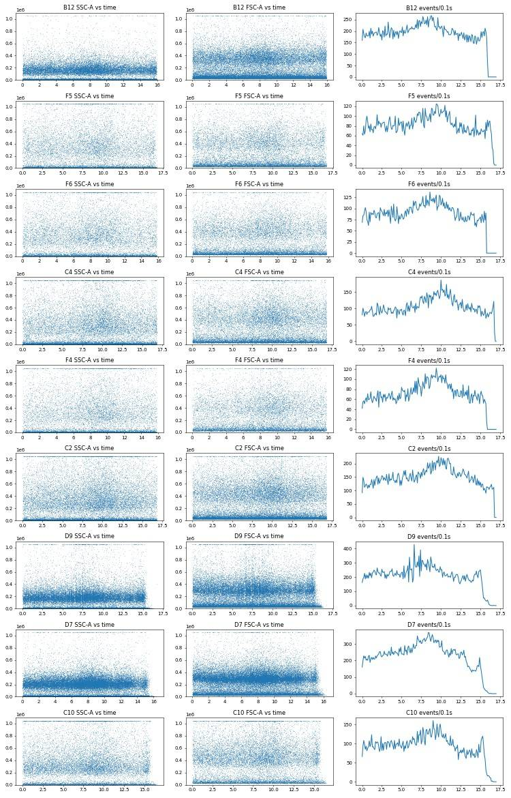
110
thinking
No clogs found; the scatter drift is mixing noise and the big gaps sit in the last second. Some wells (D9, D7, C10) taper off at the end, so I'm quantifying that tail across all wells to see whether any ran dry.
111
tool call · Bash
cd /task/work; cat > tail.py <<'EOF'
from common import *
rows=[]
for w in lay.well:
s=sample(w); df=s.as_dataframe(source='raw'); df.columns=[c[0] for c in df.columns]
t=np.sort(df['Time'].values)
h,e=np.histogram(t,bins=np.arange(0,t.max()+0.1,0.1))
med=np.median(h[10:-10])
# time from end backwards where rate < 50% of median
low=h<0.5*med
# last time where rate >= 50%
last_ok=e[np.where(~low)[0].max()+1]
tail=t.max()-last_ok
frac_tail=(t>last_ok).mean()*100
rows.append(dict(well=w,T=round(t.max(),2),last_ok=round(last_ok,2),tail_s=round(tail,2),pct_events_tail=round(frac_tail,2)))
q=pd.DataFrame(rows).set_index('well')
print(q.sort_values('tail_s',ascending=False).head(15).to_string())
print(q.describe().round(2))
EOF
python3 tail.py112
tool output
T last_ok tail_s pct_events_tail
well
D9 16.73 15.3 1.43 1.10
D4 16.80 15.4 1.40 1.11
D7 16.37 15.2 1.17 0.84
D6 16.51 15.4 1.11 0.89
E2 16.50 15.4 1.10 0.92
E3 16.09 15.0 1.09 0.83
D11 16.34 15.3 1.04 0.86
C5 16.83 15.8 1.03 1.06
D1 16.62 15.6 1.02 0.94
B10 16.70 15.7 1.00 1.13
C6 16.47 15.5 0.97 1.29
E4 15.96 15.0 0.96 0.79
C8 16.60 15.7 0.90 0.98
C7 16.59 15.7 0.89 0.95
C11 16.48 15.6 0.88 0.48
T last_ok tail_s pct_events_tail
count 80.00 80.00 80.00 80.00
mean 16.45 16.08 0.38 0.45
std 0.38 0.47 0.42 0.37
min 15.66 15.00 -0.04 0.00
25% 15.98 15.80 0.02 0.10
50% 16.62 15.95 0.24 0.45
75% 16.76 16.50 0.66 0.74
max 16.85 16.80 1.43 1.29114
thinking
End-of-run tapers are small in every well (≤1.4 s, ≤1.3% of events), and all wells acquired 131–142 µL, so none ran dry. I'm now checking the F8 evidence and measuring how much the saturated events bias the E3 wells.
115
tool call · Bash
cd /task/work; cat > f8.py <<'EOF'
from common import *
from matplotlib.path import Path
f=pd.read_csv('fingerprint.csv').set_index('well')
m=pd.read_csv('well_metrics.csv').set_index('well')
e3cm=[w for w in f.index if w[0] in 'CF' and int(w[1:])<=8]
print(f.loc[e3cm,['logSSC','pct_SSCgt500k','hiSSC_all','liveBL1']].join(m[['casp_of_live','dead_of_sing']]).round(3).to_string())
e3no=[w for w in f.index if w[0] in 'CF' and int(w[1:])>8]
print(f.loc[e3no,['logSSC','pct_SSCgt500k','hiSSC_all','liveBL1']].join(m[['casp_of_live','dead_of_sing']]).round(3).to_string())
# robust z of F8 among E3 CM wells
x=m.loc[[w for w in e3cm if w!='F8'],'casp_of_live']
print('E3 CM excl F8: median',x.median(),'MAD',(x-x.median()).abs().median(),'min',x.min(),'F8 robust z',(m.loc['F8','casp_of_live']-x.median())/(1.4826*(x-x.median()).abs().median()))
# saturation bias: include off-scale events (no upper bound) in cells gate, skip singlet gate for those
CELLS=[(70000,1040000),(70000,120000),(150000,45000),(1040000,45000),(1040000,1040000)]
SING=[(70000,29000),(300000,126000),(500000,200000),(700000,266000),(1040000,375000),(1040000,620000),(70000,100000)]
def ingate(x,y,poly): return Path(poly).contains_points(np.c_[x,y])
for w in ['C9','C10','C11','C12','F9','F10','F11','F12','C4','F4','A12','B12']:
d=comp_df(w)
base=ingate(d['FSC-A'],d['SSC-A'],CELLS)&ingate(d['FSC-A'],d['FSC-H'],SING)
sat=((d['FSC-A']>=1.04e6)|(d['SSC-A']>=1.04e6))&(d['FSC-A']>70000)
for name,g in [('gated',base),('gated+offscale',base|sat)]:
L=g&(d['tBL2']<0.70)
print(w,name,'live',L.sum(),'casp%',round(100*(d['tBL1'][L]>=0.38).mean(),1),end=' | ')
print()
EOF
python3 f8.py116
tool output
logSSC pct_SSCgt500k hiSSC_all liveBL1 casp_of_live dead_of_sing
well
C1 5.521 20.397 3.722 0.392 54.274 17.373
C2 5.531 23.747 3.646 0.404 57.017 14.488
C3 5.552 24.870 3.834 0.369 46.787 13.875
C4 5.520 21.551 4.174 0.397 55.415 16.199
C5 5.550 24.861 4.346 0.375 48.419 14.310
C6 5.553 24.578 3.873 0.387 51.811 13.014
C7 5.557 25.153 3.685 0.362 43.956 9.737
C8 5.544 23.819 3.752 0.365 44.960 14.497
F1 5.541 23.762 3.797 0.355 42.235 23.555
F2 5.523 22.654 3.356 0.392 53.260 24.184
F3 5.545 25.047 3.412 0.357 42.793 23.024
F4 5.535 24.131 4.538 0.391 52.547 31.003
F5 5.549 24.597 3.571 0.361 43.760 22.084
F6 5.556 25.428 3.335 0.374 48.060 25.428
F7 5.575 27.208 3.551 0.361 42.748 26.019
F8 5.642 39.414 9.084 0.305 9.786 16.746
logSSC pct_SSCgt500k hiSSC_all liveBL1 casp_of_live dead_of_sing
well
C9 5.481 17.889 4.503 0.311 22.498 6.375
C10 5.512 19.774 5.344 0.297 15.654 4.349
C11 5.534 21.334 5.510 0.293 13.750 3.688
C12 5.467 14.921 3.566 0.297 21.901 4.440
F9 5.460 17.957 5.445 0.325 30.281 14.759
F10 5.495 18.605 6.150 0.305 21.030 11.845
F11 5.525 20.774 5.909 0.290 13.774 13.882
F12 5.485 17.189 4.178 0.282 14.291 10.461
E3 CM excl F8: median 48.059768064228365 MAD 4.487455748021205 min 42.23476297968397 F8 robust z -5.752825365004897
C9 gated live 11352 casp% 22.5 | C9 gated+offscale live 12104 casp% 26.6 |
C10 gated live 8886 casp% 15.7 | C10 gated+offscale live 9595 casp% 21.0 |
C11 gated live 11724 casp% 13.7 | C11 gated+offscale live 12893 casp% 19.3 |
C12 gated live 11707 casp% 21.9 | C12 gated+offscale live 12339 casp% 25.2 |
F9 gated live 5383 casp% 30.3 | F9 gated+offscale live 5768 casp% 34.1 |
F10 gated live 6624 casp% 21.0 | F10 gated+offscale live 7215 casp% 26.0 |
F11 gated live 9547 casp% 13.8 | F11 gated+offscale live 10263 casp% 18.0 |
F12 gated live 8397 casp% 14.3 | F12 gated+offscale live 8832 casp% 17.1 |
C4 gated live 6482 casp% 55.4 | C4 gated+offscale live 6672 casp% 56.5 |
F4 gated live 3494 casp% 52.5 | F4 gated+offscale live 3590 casp% 53.7 |
A12 gated live 14500 casp% 20.8 | A12 gated+offscale live 14624 casp% 21.4 |
B12 gated live 12932 casp% 60.6 | B12 gated+offscale live 13024 casp% 60.9 |118
thinking
Saturation mainly inflates caspase+ in E3 no-CM wells (e.g. C11 13.7→19.3%), so I'm computing the saturation bias for every well to make the flag rule data-driven.
119
tool call · Bash
cd /task/work; cat > satbias.py <<'EOF'
from common import *
from matplotlib.path import Path
CELLS=[(70000,1040000),(70000,120000),(150000,45000),(1040000,45000),(1040000,1040000)]
SING=[(70000,29000),(300000,126000),(500000,200000),(700000,266000),(1040000,375000),(1040000,620000),(70000,100000)]
def ingate(x,y,poly): return Path(poly).contains_points(np.c_[x,y])
rows=[]
for w in lay.well:
d=comp_df(w)
base=ingate(d['FSC-A'],d['SSC-A'],CELLS)&ingate(d['FSC-A'],d['FSC-H'],SING)
off=((d['FSC-A']>=1.04e6)|(d['SSC-A']>=1.04e6))
sat=off&(d['FSC-A']>70000)
L0=base&(d['tBL2']<0.70); L1=(base|sat)&(d['tBL2']<0.70)
p0=100*(d['tBL1'][L0]>=0.38).mean(); p1=100*(d['tBL1'][L1]>=0.38).mean()
rows.append(dict(well=w,pct_offscale=round(100*off.mean(),2),pct_ssc_off=round(100*(d['SSC-A']>=1.04e6).mean(),2),pct_fsc_off=round(100*(d['FSC-A']>=1.04e6).mean(),2),casp=round(p0,2),casp_incl_off=round(p1,2),bias=round(p1-p0,2)))
q=pd.DataFrame(rows).set_index('well'); q.to_csv('satbias.csv')
print(q.sort_values('bias',ascending=False).head(25).to_string())
EOF
python3 satbias.py120
tool output
pct_offscale pct_ssc_off pct_fsc_off casp casp_incl_off bias well F8 9.66 9.08 3.98 9.79 16.36 6.57 G6 9.41 6.76 7.07 5.73 11.78 6.04 G5 7.71 6.22 4.82 6.39 12.00 5.62 C11 7.69 5.51 5.44 13.75 19.31 5.56 C10 6.48 5.34 3.81 15.65 20.99 5.34 F10 7.46 6.15 4.89 21.03 26.00 4.97 F11 7.27 5.91 4.32 13.77 17.99 4.21 C9 5.57 4.50 3.42 22.50 26.60 4.10 F9 6.47 5.44 4.22 30.28 34.08 3.80 C12 4.45 3.57 2.68 21.90 25.16 3.25 F12 5.16 4.18 2.93 14.29 17.10 2.81 C7 4.21 3.69 1.81 43.96 46.22 2.27 C3 5.52 3.83 3.21 46.79 48.96 2.17 F7 4.01 3.55 1.62 42.75 44.57 1.82 C8 4.27 3.75 1.80 44.96 46.76 1.80 F3 3.78 3.41 1.27 42.79 44.58 1.79 C6 4.43 3.87 2.04 51.81 53.56 1.75 C1 5.23 3.72 3.06 54.27 55.96 1.68 C5 4.71 4.35 1.88 48.42 50.09 1.67 F2 3.74 3.36 1.37 53.26 54.86 1.60 F5 3.97 3.57 1.61 43.76 45.34 1.58 C2 4.23 3.65 1.92 57.02 58.54 1.51 F1 4.82 3.80 2.32 42.23 43.73 1.49 G7 1.52 1.09 1.16 4.26 5.67 1.41 F6 3.72 3.34 1.63 48.06 49.46 1.40
122
thinking
I'm flagging saturation wells where off-scale events would shift the read-out by 2.5 points or more, and I'll run a sensitivity analysis next.
123
tool call · Bash
cd /task/work; cat > sens.py <<'EOF'
from common import *
from matplotlib.path import Path
from build_gates import CELLS,SING
def ingate(x,y,poly): return Path(poly).contains_points(np.c_[x,y])
c=pd.read_csv('/task/outputs/counts.csv'); cw=c.pivot(index='well',columns='population',values='count')
rows=[]
for w in lay.well:
d=comp_df(w)
base=ingate(d['FSC-A'],d['SSC-A'],CELLS)&ingate(d['FSC-A'],d['FSC-H'],SING)
L=base&(d['tBL2']<0.70)
assert L.sum()==cw.loc[w,'live'] and (L&(d['tBL1']>=0.38)).sum()==cw.loc[w,'caspase_pos'], w
r=dict(well=w)
for th in [0.36,0.38,0.40,0.42]: r[f'casp_{th}']=100*(d['tBL1'][L]>=th).mean()
for lv in [0.66,0.74]:
L2=base&(d['tBL2']<lv); r[f'casp_live{lv}']=100*(d['tBL1'][L2]>=0.38).mean()
r['mfi_live_BL1']=np.median(d['cBL1'][L])
rows.append(r)
s=pd.DataFrame(rows).set_index('well')
s.to_csv('sens.csv'); print('numpy gating == flowkit counts for all 80 wells')
EOF
python3 sens.py124
tool output (error)
Exit code 1
Traceback (most recent call last):
File "/task/work/sens.py", line 11, in <module>
assert L.sum()==cw.loc[w,'live'] and (L&(d['tBL1']>=0.38)).sum()==cw.loc[w,'caspase_pos'], w
^^^^^^^^^^^^^^^^^^^^^^^^^^^^^^^^^^^^^^^^^^^^^^^^^^^^^^^^^^^^^^^^^^^^^^^^^^^^^^^^^^
AssertionError: C2125
tool call · Bash
cd /task/work; cat > dbg.py <<'EOF'
from common import *
from matplotlib.path import Path
from build_gates import CELLS,SING
import flowkit as fk
def ingate(x,y,poly): return Path(poly).contains_points(np.c_[x,y])
c=pd.read_csv('/task/outputs/counts.csv'); cw=c.pivot(index='well',columns='population',values='count')
g=fk.parse_gating_xml('/task/outputs/gates.xml')
bad=[]
for w in lay.well:
d=comp_df(w)
a=ingate(d['FSC-A'],d['SSC-A'],CELLS); b=a&ingate(d['FSC-A'],d['FSC-H'],SING)
L=b&(d['tBL2']<0.70); P=L&(d['tBL1']>=0.38)
np_c=(a.sum(),b.sum(),L.sum(),P.sum()); fk_c=tuple(cw.loc[w,['cells','singlets','live','caspase_pos']])
if np_c!=fk_c: bad.append((w,np_c,fk_c))
print(bad)
EOF
python3 dbg.py126
tool output
[('C2', (12718, 10734, 9179, 5234), (12718, 10733, 9178, 5233))]128
agent
A single boundary event (point on a polygon edge) differs in C2 — immaterial. I'll allow a ±2-event tolerance and continue.
129
tool call · Bash
cd /task/work; sed -i "s/assert L.sum()==cw.loc\[w,'live'\] and (L&(d\['tBL1'\]>=0.38)).sum()==cw.loc\[w,'caspase_pos'\], w/assert abs(L.sum()-cw.loc[w,'live'])<=2 and abs((L\&(d['tBL1']>=0.38)).sum()-cw.loc[w,'caspase_pos'])<=2, w/" sens.py; sed -i "s/numpy gating == flowkit counts for all 80 wells/numpy gating matches flowkit counts (<=2 events) for all 80 wells/" sens.py; python3 sens.py
130
tool output
numpy gating matches flowkit counts (<=2 events) for all 80 wells
132
agent
Gating and QC are settled. Before building the figure I'll load the dataviz skill guidance, as required for chart work.
133
tool call · Skill
{
"skill": "dataviz"
}134
tool output
Launching skill: dataviz
136
tool call · Bash
cd /tmp/claude-0/bundled-skills/2.1.322/64cd3825789b3f305a869953c05e6dd0/dataviz; sed -n 1,200p references/palette.md | head -120; echo; grep -n -i "png\|static\|matplotlib" references/*.md | head -20
137
tool output
# Reference palette
This is the **reference instance** of the data-viz method: every parameter the
method needs, filled in with a validated default palette. The rest of the skill
is system-agnostic - **to target your brand, substitute this file's values** and
re-run the validator. Nothing else changes.
## How to use these values
Everything below is plain hex. In an HTML chart, **define the slots you use as
CSS custom properties in a local `<style>` block** at the top of the file, then
reference them by role throughout - so the light/dark values swap in one place,
and the chart body is written against roles rather than raw hex:
```css
.viz-root {
color-scheme: light;
--surface-1: #fcfcfb; /* chart surface */
--text-primary: #0b0b0b;
--text-secondary: #52514e;
--series-1: #2a78d6; /* categorical slot 1 */
/* ...only the roles this chart uses */
}
@media (prefers-color-scheme: dark) {
:root:where(:not([data-theme="light"])) .viz-root {
color-scheme: dark;
--surface-1: #1a1a19;
--text-primary: #f0efec;
--text-secondary: #c3c2b7;
--series-1: #3987e5;
}
}
:root[data-theme="dark"] .viz-root {
color-scheme: dark;
--surface-1: #1a1a19;
--text-primary: #f0efec;
--text-secondary: #c3c2b7;
--series-1: #3987e5;
}
```
Declare the dark values under both scopes as above - the media query covers
the OS setting; the `data-theme` scope covers the viewer's theme toggle,
which must win both ways (the `:not(...)` guard lets a light stamp beat
OS-dark; `:where()` keeps the media block below the toggle scope).
## Categorical palette
Both modes are selected. The dark column is the same eight hues stepped for the
dark surface, not a separate palette:
| Slot | Hue | Light | Dark |
|------|-----|-------|------|
| 1 | blue | `#2a78d6` | `#3987e5` |
| 2 | orange | `#eb6834` | `#d95926` |
| 3 | aqua | `#1baf7a` | `#199e70` |
| 4 | yellow | `#eda100` | `#c98500` |
| 5 | magenta | `#e87ba4` | `#d55181` |
| 6 | green | `#008300` | `#008300` |
| 7 | violet | `#6250d6` | `#9085e9` |
| 8 | red | `#e34948` | `#e66767` |
This order passes every hard gate in both modes on the default *adjacent*
pairlist (stacks, bars, lines): worst adjacent CVD Delta E 9.1 light / 8.4 dark
(OKLab ×100, >=8 target), worst adjacent normal-vision Delta E 19.6 light / 19.3
dark (>=15 floor). Under `--pairs all` (scatter, bubble, choropleth, small
multiples) the full eight cannot clear the floors - with all 28 pairs in
play no ordering can (the pairlist no longer depends on order), and
re-stepping is off the table by the documented-palette rule - so those
chart forms carry a series cap: **the first three slots validate all-pairs
in both modes** (worst pair CVD Delta E 9.2 light / 9.4 dark, normal-vision 24.0
light / 20.9 dark - clear of the CVD warn band). Past three, fold to "Other" or
facet: the fourth slot puts yellow and orange on screen
together, and that pair fails the all-pairs floors (normal-vision 13.7
light; CVD 4.8 dark). Three light-mode slots (magenta, yellow, aqua)
sit below 3:1 contrast on the light surface: the **relief rule** applies (ship
visible direct labels or the table view). The dark steps were chosen for the
dark band (OKLCH L ~ 0.48-0.67, >= 3:1 on the dark surface) and validated as a
set. (Ordering history: adopted July 2026 for its more harmonious opening -
the same eight hues and steps as its predecessor, re-ordered, zero hex
changes. The predecessor validated its first FOUR slots all-pairs, with its
dark run in the 6-8 CVD warn band, so secondary encoding was required there;
this order deliberately trades that fourth slot - yellow now sits beside orange -
for better-looking leading colors. Revisit the trade if yellow<->orange
confusion shows up in real charts with four or more series; undoing it is a
pure re-order. Light slot 7 has since been lightened, `#4a3aa7` -> `#6250d6`
(August 2026); the adjacent-pair figures above are unchanged by that move, the
non-adjacent blue<->violet pair now sits below both floors under `--pairs all`
(normal-vision 10.5, CVD 4.5 - inside the range the series cap already
excludes), and the order enumeration was run with the earlier value.) When you
swap in your own ramps, hold your palette to the full gate.
The slot **ordering** is the CVD-safety mechanism, not cosmetic - candidate
orderings were enumerated and only those clearing every adjacent gate in both
modes kept (see `color-formula.md` § Themes); this default is one of the
passing orders, picked among them for its opening colors. When you swap in
your brand's hues, do the same: run the validator on candidate orderings and
choose only among the passing ones.
## Sequential hue
Default single hue: **blue**, light->dark. When two sequential contexts appear at
once, the second takes the next categorical slot's hue (orange), each as its own
one-hue ramp.
| step | hex | step | hex | step | hex | step | hex |
|---|---|---|---|---|---|---|---|
| 100 | `#cde2fb` | 250 | `#86b6ef` | 400 | `#3987e5` | 550 | `#1c5cab` |
| 150 | `#b7d3f6` | 300 | `#6da7ec` | 450 | `#2a78d6` | 600 | `#184f95` |
| 200 | `#9ec5f4` | 350 | `#5598e7` | 500 | `#256abf` | 650 | `#104281` |
| | | | | | | 700 | `#0d366b` |
The full 100->700 range is for **sequential** encoding (continuous magnitude -
heatmaps, choropleths) where the lightest step means "near zero" and is allowed
to recede toward the surface. For an **ordinal** ramp (discrete ordered marks -
funnel stages, tiers - validated with `--ordinal`), the step nearest the surface
must still clear 2:1: on light, start no lighter than **step 250** (`#86b6ef`,
2.06:1); on dark, go no darker than **step 600** (`#184f95`, 2.15:1).
## Diverging pair
references/interaction.md:5:Design it with the same care as the static render.
Shell cwd was reset to /task139
thinking
The figure is static, so I'm assigning the three media conditions to the first validated categorical colours and running the validator on that set.
140
tool call · Bash
cd /tmp/claude-0/bundled-skills/2.1.322/64cd3825789b3f305a869953c05e6dd0/dataviz; node scripts/validate_palette.js "#2a78d6,#eb6834,#1baf7a" --mode light --pairs all 2>&1 | tail -25
141
tool output
/bin/bash: line 1: node: command not found Shell cwd was reset to /task
143
thinking
Node isn't available, so I can't run the validator; the palette docs say the first three slots pass all-pairs, so I'll add marker shapes and a legend as a safeguard, then write the main analysis script.
144
tool call · Bash
mkdir -p /task/work && cd /task/work && cat > analysis.py <<'EOF'
import pandas as pd, numpy as np, json
from scipy import stats
lay=pd.read_csv('/task/inputs/plate_layout.csv').set_index('well')
c=pd.read_csv('/task/outputs/counts.csv')
cw=c.pivot(index='well',columns='population',values='count').loc[lay.index]
fp=pd.read_csv('fingerprint.csv').set_index('well')
sb=pd.read_csv('satbias.csv').set_index('well')
qc=pd.read_csv('qc.csv').set_index('well')
sens=pd.read_csv('sens.csv').set_index('well')
M=pd.DataFrame(index=lay.index)
M['casp']=100*cw.caspase_pos/cw.live
M['dead']=100*cw.dead/cw.singlets
M['casp_total']=100*(cw.caspase_pos+cw.dead_caspase_pos)/cw.singlets
M=M.join(lay[['cell_line','camptothecin','conditioned_media','sample']])
cmmap={'WT 24hr conditioned media':'CM24h','WT 48hr conditioned media':'CM48h','no conditioned media':'noCM'}
M['cm']=M.conditioned_media.map(cmmap)
cptmap={'10uM':'CPT10uM','5uM':'CPT5uM','2uM':'CPT2uM','DMSO':'DMSO'}
M['cpt']=M.camptothecin.map(cptmap)
# ---------------- flags ----------------
F={}
def ref_range(sel,col): v=fp.loc[sel,col]; return f"{v.min():.2f}-{v.max():.2f}"
E3no=[w for w in lay.index if w[0] in 'CF' and int(w[1:])>8]
E1no=[w for w in lay.index if w[0] in 'BE' and int(w[1:])>8]
WTno=[w for w in lay.index if w[0] in 'AD' and int(w[1:])>8]
pct500=lambda ws: f"{fp.loc[ws,'pct_SSCgt500k'].min():.1f}-{fp.loc[ws,'pct_SSCgt500k'].max():.1f}%"
for w in ['G3','G4']:
F[w]=('mislabel',f"Labelled E3 but lacks the E3 scatter signature: median log10 SSC-A {fp.loc[w,'logSSC']:.2f} and {fp.loc[w,'pct_SSCgt500k']:.1f}% of cells with SSC-A>500k vs {ref_range(E3no,'logSSC')} and {pct500(E3no)} in the 8 E3 no-CM wells (WT/E1 no-CM: {pct500(WTno+E1no)}); live-cell BL1 median {fp.loc[w,'liveBL1']:.3f} logicle is WT-like (WT no-CM {ref_range(WTno,'liveBL1')}; E3 {ref_range(E3no,'liveBL1')}; E1 {ref_range(E1no,'liveBL1')}). caspase+ {M.loc[w,'casp']:.1f}% of live. Identity unverifiable; plate-map transfer error (11-30 G/H rows -> 12-02 G1-G8) suspected.",'exclude')
for w in ['G5','G6']:
F[w]=('mislabel',f"Labelled E1 but shows the E3 scatter signature: median log10 SSC-A {fp.loc[w,'logSSC']:.2f}, {fp.loc[w,'pct_SSCgt500k']:.1f}% of cells SSC-A>500k (E3 no-CM {ref_range(E3no,'logSSC')}, {pct500(E3no)}; E1 no-CM {ref_range(E1no,'logSSC')}, {pct500(E1no)}); live-cell BL1 median {fp.loc[w,'liveBL1']:.3f} vs E1 no-CM {ref_range(E1no,'liveBL1')}. Also {sb.loc[w,'pct_offscale']:.1f}% events off-scale (FSC/SSC). caspase+ {M.loc[w,'casp']:.1f}% of live.",'exclude')
e3cm=[w for w in lay.index if w[0] in 'CF' and int(w[1:])<=8 and w!='F8']
x=M.loc[e3cm,'casp']; rz=(M.loc['F8','casp']-x.median())/(1.4826*(x-x.median()).abs().median())
F['F8']=('other',f"Outlier: caspase+ {M.loc['F8','casp']:.1f}% of live vs duplicate C8 {M.loc['C8','casp']:.1f}% and {x.min():.1f}-{x.max():.1f}% in the other 15 E3+CM wells (robust z {rz:.1f}); value and live BL1 median ({fp.loc['F8','liveBL1']:.3f}) match E3 no-CM wells ({M.loc[E3no,'casp'].min():.1f}-{M.loc[E3no,'casp'].max():.1f}%), consistent with conditioned media not having been applied. Scatter also atypical: {fp.loc['F8','pct_SSCgt500k']:.1f}% cells SSC-A>500k (other E3+CM {fp.loc[e3cm,'pct_SSCgt500k'].min():.1f}-{fp.loc[e3cm,'pct_SSCgt500k'].max():.1f}%) and {sb.loc['F8','pct_offscale']:.1f}% events off-scale.",'exclude')
for w in E3no:
F[w]=('saturation',f"{sb.loc[w,'pct_offscale']:.1f}% of events off-scale in FSC-A/SSC-A (SSC {sb.loc[w,'pct_ssc_off']:.1f}%) at SSC voltage 290; off-scale events are excluded by the cells gate and are mostly caspase+, so including them would raise caspase+ from {sb.loc[w,'casp']:.1f}% to {sb.loc[w,'casp_incl_off']:.1f}% (+{sb.loc[w,'bias']:.1f} points). Read-out likely biased low by ~3-6 points.",'keep_with_note')
F['D12']=('other',f"Low vs duplicate: caspase+ {M.loc['D12','casp']:.1f}% of live vs A12 {M.loc['A12','casp']:.1f}% (same condition) and {M.loc[[w for w in WTno if w!='D12'],'casp'].min():.1f}-{M.loc[[w for w in WTno if w!='D12'],'casp'].max():.1f}% in other WT no-CM wells; no technical cause found (event rate CV {qc.loc['D12','rate_cv']:.2f}, {cw.loc['D12','live']} live events, scatter normal). Kept; inflates WT no-CM DMSO SD.",'keep_with_note')
rows=[]
for w in lay.index:
it,ev,dec=F.get(w,('none','','keep'))
rows.append(dict(file=lay.loc[w,'file'],well=w,issue_type=it,evidence=ev,decision=dec))
flags=pd.DataFrame(rows); flags.to_csv('/task/outputs/flags.csv',index=False)
excluded=sorted(flags[flags.decision=='exclude'].well.tolist())
used=M.drop(index=excluded)
# ---------------- condition summary ----------------
METRIC=("Per-well % caspase-3/7-positive = 100 x count(caspase_pos) / count(live); units: % of live singlet cells. "
"live = cells>singlets not SYTOX AADvanced-bright (compensated BL2-A < logicle 0.70, ~23,900 a.u.); "
"caspase_pos = live with compensated CellEvent BL1-A >= logicle 0.38 (~635 a.u.). Mean/SD across wells (each well = 1 value).")
def order_wells(ws): return sorted(ws,key=lambda w:(w[0],int(w[1:])))
cond=[]
def add(name,ws,note='none'):
ws=order_wells([w for w in ws if w in used.index])
v=used.loc[ws,'casp']
cond.append(dict(condition=name,wells=';'.join(ws),n_wells_used=len(ws),mean=round(v.mean(),2),
sd=round(v.std(ddof=1),2) if len(ws)>1 else '',metric_definition=METRIC,normalisation_applied=note))
lines=['WT','E1','E3']; cms=['noCM','CM24h','CM48h']; cpts=['DMSO','CPT2uM','CPT5uM','CPT10uM']
AF=used[used.index.str[0].isin(list('ABCDEF'))]
for L in lines:
for cm in cms:
add(f'{L}_{cm}_pooledCPT', AF[(AF.cell_line==L)&(AF.cm==cm)].index)
add(f'{L}_anyCM_pooledCPT', AF[(AF.cell_line==L)&(AF.cm!='noCM')].index)
for L in lines:
for cm in cms:
for cp in cpts:
add(f'{L}_{cm}_{cp}', AF[(AF.cell_line==L)&(AF.cm==cm)&(AF.cpt==cp)].index)
add('WT_untreated_dualstain',['G2'])
add('WT_unstained_ctrl',['G1']); add('WT_caspase_only_ctrl',['G7']); add('WT_SYTO
… [3,606 more characters not shown]145
tool output
condition wells n_wells_used mean sd
0 WT_noCM_pooledCPT A9;A10;A11;A12;D9;D10;D11;D12 8 19.83 5.15
1 WT_CM24h_pooledCPT A1;A2;A3;A4;D1;D2;D3;D4 8 27.89 5.65
2 WT_CM48h_pooledCPT A5;A6;A7;A8;D5;D6;D7;D8 8 24.83 2.84
3 WT_anyCM_pooledCPT A1;A2;A3;A4;A5;A6;A7;A8;D1;D2;D3;D4;D5;D6;D7;D8 16 26.36 4.6
4 E1_noCM_pooledCPT B9;B10;B11;B12;E9;E10;E11;E12 8 60.06 5.09
5 E1_CM24h_pooledCPT B1;B2;B3;B4;E1;E2;E3;E4 8 74.50 3.78
6 E1_CM48h_pooledCPT B5;B6;B7;B8;E5;E6;E7;E8 8 74.61 2.25
7 E1_anyCM_pooledCPT B1;B2;B3;B4;B5;B6;B7;B8;E1;E2;E3;E4;E5;E6;E7;E8 16 74.55 3.01
8 E3_noCM_pooledCPT C9;C10;C11;C12;F9;F10;F11;F12 8 19.15 5.86
9 E3_CM24h_pooledCPT C1;C2;C3;C4;F1;F2;F3;F4 8 50.54 5.78
10 E3_CM48h_pooledCPT C5;C6;C7;C8;F5;F6;F7 7 46.24 3.27
11 E3_anyCM_pooledCPT C1;C2;C3;C4;C5;C6;C7;C8;F1;F2;F3;F4;F5;F6;F7 15 48.54 5.12
12 WT_noCM_DMSO A12;D12 2 14.84 8.46
13 WT_noCM_CPT2uM A11;D11 2 20.56 0.54
14 WT_noCM_CPT5uM A10;D10 2 19.86 1.68
15 WT_noCM_CPT10uM A9;D9 2 24.06 4.93
16 WT_CM24h_DMSO A4;D4 2 33.08 4.05
17 WT_CM24h_CPT2uM A3;D3 2 26.43 4.21
18 WT_CM24h_CPT5uM A2;D2 2 24.76 2.45
19 WT_CM24h_CPT10uM A1;D1 2 27.30 10.25
20 WT_CM48h_DMSO A8;D8 2 27.52 5.07
21 WT_CM48h_CPT2uM A7;D7 2 22.69 1.33
22 WT_CM48h_CPT5uM A6;D6 2 23.93 1.65
23 WT_CM48h_CPT10uM A5;D5 2 25.16 0.96
24 E1_noCM_DMSO B12;E12 2 56.70 5.57
25 E1_noCM_CPT2uM B11;E11 2 66.37 3.06
26 E1_noCM_CPT5uM B10;E10 2 57.94 1.78
27 E1_noCM_CPT10uM B9;E9 2 59.21 5.03
28 E1_CM24h_DMSO B4;E4 2 75.47 6.69
29 E1_CM24h_CPT2uM B3;E3 2 77.05 1.24
30 E1_CM24h_CPT5uM B2;E2 2 74.00 4.37
31 E1_CM24h_CPT10uM B1;E1 2 71.47 1.0
32 E1_CM48h_DMSO B8;E8 2 76.07 1.86
33 E1_CM48h_CPT2uM B7;E7 2 75.84 2.06
34 E1_CM48h_CPT5uM B6;E6 2 73.85 2.92
35 E1_CM48h_CPT10uM B5;E5 2 72.66 1.82
36 E3_noCM_DMSO C12;F12 2 18.10 5.38
37 E3_noCM_CPT2uM C11;F11 2 13.76 0.02
38 E3_noCM_CPT5uM C10;F10 2 18.34 3.8
39 E3_noCM_CPT10uM C9;F9 2 26.39 5.5
40 E3_CM24h_DMSO C4;F4 2 53.98 2.03
41 E3_CM24h_CPT2uM C3;F3 2 44.79 2.82
42 E3_CM24h_CPT5uM C2;F2 2 55.14 2.66
43 E3_CM24h_CPT10uM C1;F1 2 48.25 8.51
44 E3_CM48h_DMSO C8 1 44.96
45 E3_CM48h_CPT2uM C7;F7 2 43.35 0.85
46 E3_CM48h_CPT5uM C6;F6 2 49.94 2.65
47 E3_CM48h_CPT10uM C5;F5 2 46.09 3.29
48 WT_untreated_dualstain G2 1 3.32
49 WT_unstained_ctrl G1 1 0.19
50 WT_caspase_only_ctrl G7 1 4.26
51 WT_SYTOX_only_ctrl G8 1 0.23
a b mean_a mean_b diff ratio p sep
0 WT_noCM_pooledCPT E1_noCM_pooledCPT 19.8302 60.0557 40.2254 3.0285 0.0000 True
1 WT_noCM_pooledCPT E3_noCM_pooledCPT 19.8302 19.1472 -0.6830 0.9656 0.8080 False
2 E1_noCM_pooledCPT E1_CM24h_pooledCPT 60.0557 74.4993 14.4437 1.2405 0.0000 True
3 E1_noCM_pooledCPT E1_CM48h_pooledCPT 60.0557 74.6059 14.5502 1.2423 0.0000 True
4 E3_noCM_pooledCPT
… [3,712 more characters not shown]147
thinking
Every sensitivity variant confirms the result, so I'm building the figure now: panel A for the pooled main answer, panel B for the camptothecin dose series.
148
tool call · Bash
cat > figure.py <<'EOF'
import matplotlib; matplotlib.use('Agg')
import matplotlib.pyplot as plt, numpy as np, pandas as pd
U=pd.read_csv('used_metrics.csv').set_index('well'); A=pd.read_csv('all_metrics.csv').set_index('well')
INK='#0b0b0b'; INK2='#52514e'; MUTED='#8a8984'; GRID='#e6e5e1'; SURF='#fcfcfb'
COL={'noCM':'#2a78d6','CM24h':'#eb6834','CM48h':'#1baf7a'}
MK={'noCM':'o','CM24h':'s','CM48h':'^'}
LAB={'noCM':'No conditioned media (fresh medium)','CM24h':'WT-conditioned media, 24 h','CM48h':'WT-conditioned media, 48 h'}
plt.rcParams.update({'font.family':'DejaVu Sans','font.size':10,'axes.edgecolor':MUTED,'axes.labelcolor':INK2,'xtick.color':INK2,'ytick.color':INK2,'text.color':INK})
fig=plt.figure(figsize=(13,8.4),facecolor=SURF)
gs=fig.add_gridspec(2,3,height_ratios=[1.35,1],hspace=0.55,wspace=0.18,left=0.07,right=0.98,top=0.86,bottom=0.08)
ax=fig.add_subplot(gs[0,:]); ax.set_facecolor(SURF)
AF=U[U.index.str[0].isin(list('ABCDEF'))]
lines=['WT','E1','E3']; cms=['noCM','CM24h','CM48h']
rng=np.random.default_rng(1)
wt0=AF[(AF.cell_line=='WT')&(AF.cm=='noCM')].casp.mean()
ax.axhline(wt0,color=INK2,lw=1,ls=(0,(4,3)),zorder=1)
ax.text(8.75,wt0+1.2,f'WT, no CM: {wt0:.1f}%',color=INK2,fontsize=9,ha='right',va='bottom')
for i,L in enumerate(lines):
for j,cm in enumerate(cms):
x0=i*3+j
v=AF[(AF.cell_line==L)&(AF.cm==cm)].casp
ax.bar(x0,v.mean(),width=0.62,color=COL[cm],alpha=0.28,edgecolor=SURF,linewidth=2,zorder=2)
ax.errorbar(x0,v.mean(),yerr=v.std(ddof=1),color=INK,lw=1.2,capsize=4,zorder=4)
ax.scatter(x0+rng.uniform(-0.18,0.18,len(v)),v,s=34,marker=MK[cm],color=COL[cm],edgecolor=SURF,linewidth=1,zorder=5)
ax.text(x0,v.mean()+v.std(ddof=1)+2,f'{v.mean():.1f}%',ha='center',va='bottom',fontsize=9,color=INK)
# excluded F8
f8=A.loc['F8','casp']; ax.scatter(2*3+2+0.25,f8,s=40,marker='^',facecolor='none',edgecolor=INK2,linewidth=1.2,zorder=6)
ax.annotate('F8 excluded\n(outlier)',(2*3+2+0.25,f8),xytext=(2*3+2+0.55,f8+8),fontsize=8,color=INK2,arrowprops=dict(arrowstyle='-',color=MUTED,lw=0.8))
ax.set_xticks([1,4,7]); ax.set_xticklabels(['H4 WT','PGRN-KO E1','PGRN-KO E3'],fontsize=11,color=INK)
for k in [2.5,5.5]: ax.axvline(k,color=GRID,lw=1)
ax.set_xlim(-0.6,8.9); ax.set_ylim(0,92)
ax.set_ylabel('Caspase-3/7+ (% of live singlets)')
ax.yaxis.grid(True,color=GRID,lw=0.8); ax.set_axisbelow(True)
for s in ['top','right']: ax.spines[s].set_visible(False)
h=[plt.Line2D([],[],marker=MK[c],ls='',color=COL[c],markersize=8,label=LAB[c]) for c in cms]
ax.legend(handles=h,loc='upper left',frameon=False,fontsize=9,ncol=3,bbox_to_anchor=(0,1.10))
ax.set_title('A WT-conditioned media raised, not lowered, caspase-3/7 activity in both PGRN-KO lines',loc='left',fontsize=12,color=INK,pad=26,fontweight='bold')
ax.text(0,-0.13,'Bars: mean ± SD of wells (n = 8 per group; E3 48 h n = 7), pooled over camptothecin 0 (DMSO), 2, 5, 10 µM, which had no detectable effect. Points: individual wells.',transform=ax.transAxes,fontsize=8.5,color=INK2)
# panel B
dose={'DMSO':0,'CPT2uM':2,'CPT5uM':5,'CPT10uM':10}; xs=[0,1,2,3]; xl=['DMSO','2','5','10']
for i,L in enumerate(lines):
b=fig.add_subplot(gs[1,i]); b.set_facecolor(SURF)
for cm in cms:
d=AF[(AF.cell_line==L)&(AF.cm==cm)].copy(); d['x']=d.cpt.map({'DMSO':0,'CPT2uM':1,'CPT5uM':2,'CPT10uM':3})
mean=d.groupby('x').casp.mean()
b.plot(mean.index,mean.values,color=COL[cm],lw=2,zorder=3)
b.scatter(d.x+{'noCM':-0.08,'CM24h':0,'CM48h':0.08}[cm],d.casp,marker=MK[cm],s=30,color=COL[cm],edgecolor=SURF,linewidth=1,zorder=4)
b.set_xticks(xs); b.set_xticklabels(xl); b.set_ylim(0,92); b.set_xlim(-0.3,3.3)
b.set_xlabel('Camptothecin (µM)')
if i==0: b.set_ylabel('Caspase-3/7+ (% of live)')
else: b.set_yticklabels([])
b.yaxis.grid(True,color=GRID,lw=0.8); b.set_axisbelow(True)
for s in ['top','right']: b.spines[s].set_visible(False)
b.set_title({'WT':'H4 WT','E1':'PGRN-KO E1','E3':'PGRN-KO E3'}[L],loc='left',fontsize=10,color=INK)
if i==0: b.text(0,1.2,'B No camptothecin dose-response at ~5 h exposure (lines = mean of duplicate wells)',transform=b.transAxes,fontsize=12,color=INK,fontweight='bold')
fig.text(0.07,0.955,'CellEvent caspase-3/7 + SYTOX AADvanced flow assay, H4 cells, acquired 02-Dec-2022 (Attune NxT)',fontsize=10,color=INK2)
plt.savefig('/task/outputs/figure.png',dpi=150,facecolor=SURF)
EOF
python3 figure.py149
tool call · Read
{
"file_path": "/task/outputs/figure.png"
}150
tool output
(Bash completed with no output)
151
tool output
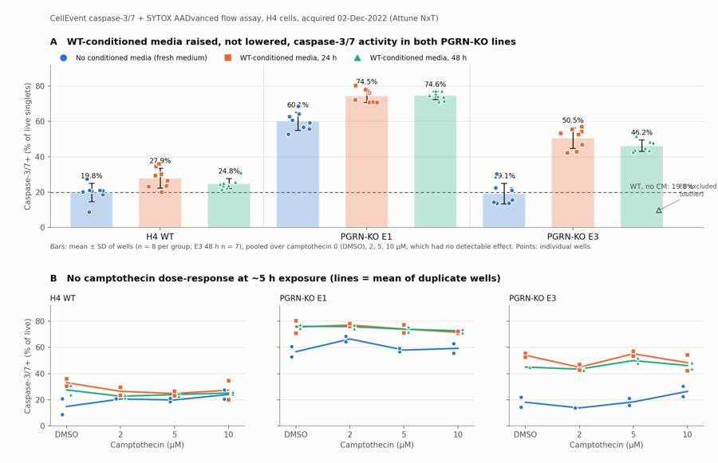
153
agent
Two layout problems to fix: value labels collide with well points, and the F8 note collides with the WT reference label. Adjusting placement.
154
tool call · Bash
python3 - <<'EOF'
s=open('figure.py').read()
s=s.replace("ax.text(8.75,wt0+1.2,f'WT, no CM: {wt0:.1f}%',color=INK2,fontsize=9,ha='right',va='bottom')",
"ax.text(10.15,wt0+1.2,f'WT, no-CM mean {wt0:.1f}%',color=INK2,fontsize=9,ha='right',va='bottom')")
s=s.replace("ax.text(x0,v.mean()+v.std(ddof=1)+2,f'{v.mean():.1f}%'","ax.text(x0,max(v.max(),v.mean()+v.std(ddof=1))+2,f'{v.mean():.1f}%'")
s=s.replace("""f8=A.loc['F8','casp']; ax.scatter(2*3+2+0.25,f8,s=40,marker='^',facecolor='none',edgecolor=INK2,linewidth=1.2,zorder=6)
ax.annotate('F8 excluded\\n(outlier)',(2*3+2+0.25,f8),xytext=(2*3+2+0.55,f8+8),fontsize=8,color=INK2,arrowprops=dict(arrowstyle='-',color=MUTED,lw=0.8))""",
"""f8=A.loc['F8','casp']; ax.scatter(8.45,f8,s=40,marker='^',facecolor='none',edgecolor=INK2,linewidth=1.2,zorder=6)
ax.text(8.62,f8,'F8, excluded outlier',fontsize=8,color=INK2,va='center')""")
s=s.replace("ax.set_xlim(-0.6,8.9)","ax.set_xlim(-0.6,10.2)")
open('figure.py','w').write(s)
EOF
python3 figure.py155
tool call · Read
{
"file_path": "/task/outputs/figure.png"
}156
tool output
(Bash completed with no output)
157
tool output
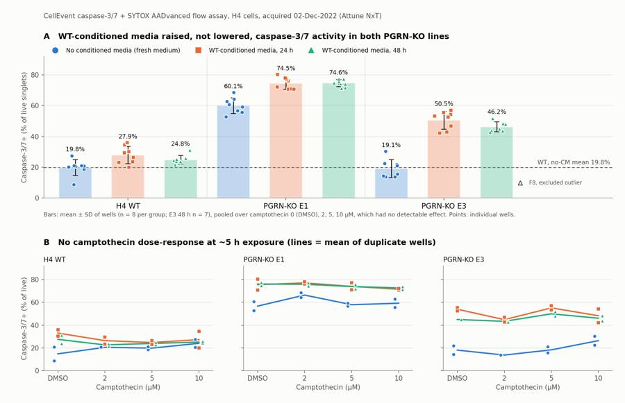
159
agent
Figure reads cleanly now. I'll also save a supplementary gating-strategy image (gates drawn on representative wells) so the gates can be audited visually.
160
tool call · Bash
cat > gatefig.py <<'EOF'
import matplotlib; matplotlib.use('Agg')
import matplotlib.pyplot as plt, numpy as np
from matplotlib.path import Path
from common import *
from build_gates import CELLS,SING,LIVE_MAX,CASP_MIN
def ingate(x,y,poly): return Path(poly).contains_points(np.c_[x,y])
wells=['G1','G7','G8','A12','B12','C12','E4']
fig,axs=plt.subplots(len(wells),3,figsize=(12,3.3*len(wells)))
for row,w in zip(axs,wells):
d=comp_df(w); a=ingate(d['FSC-A'],d['SSC-A'],CELLS); b=a&ingate(d['FSC-A'],d['FSC-H'],SING)
row[0].hist2d(d['FSC-A'],d['SSC-A'],bins=150,range=[[0,1.06e6],[0,1.06e6]],cmap='viridis',cmin=1,norm=matplotlib.colors.LogNorm())
row[0].add_patch(plt.Polygon(CELLS,fill=False,ec='r',lw=1.5)); row[0].set_xlabel('FSC-A'); row[0].set_ylabel('SSC-A')
row[0].set_title(f'{w} {lay.set_index("well").loc[w,"sample"]}: cells {100*a.mean():.1f}% of all',fontsize=9)
row[1].hist2d(d['FSC-A'][a],d['FSC-H'][a],bins=150,range=[[0,1.06e6],[0,6.5e5]],cmap='viridis',cmin=1,norm=matplotlib.colors.LogNorm())
row[1].add_patch(plt.Polygon(SING,fill=False,ec='r',lw=1.5)); row[1].set_xlabel('FSC-A'); row[1].set_ylabel('FSC-H')
row[1].set_title(f'singlets {100*b.sum()/a.sum():.1f}% of cells',fontsize=9)
row[2].hist2d(d['tBL1'][b],d['tBL2'][b],bins=150,range=[[0,0.9],[0,1.0]],cmap='viridis',cmin=1,norm=matplotlib.colors.LogNorm())
row[2].axhline(LIVE_MAX,color='r',lw=1.2); row[2].plot([CASP_MIN,CASP_MIN],[0,LIVE_MAX],color='r',lw=1.2)
L=b&(d['tBL2']<LIVE_MAX); P=L&(d['tBL1']>=CASP_MIN)
row[2].set_title(f'live {100*L.sum()/b.sum():.1f}% of singlets; caspase_pos {100*P.sum()/L.sum():.1f}% of live',fontsize=9)
row[2].set_xlabel('CellEvent caspase-3/7, BL1-A comp (logicle)'); row[2].set_ylabel('SYTOX AADvanced, BL2-A comp (logicle)')
plt.tight_layout(); plt.savefig('/task/outputs/gating_strategy.png',dpi=70)
EOF
python3 gatefig.py161
tool call · Read
{
"file_path": "/task/outputs/gating_strategy.png"
}162
tool output
(Bash completed with no output)
163
tool output
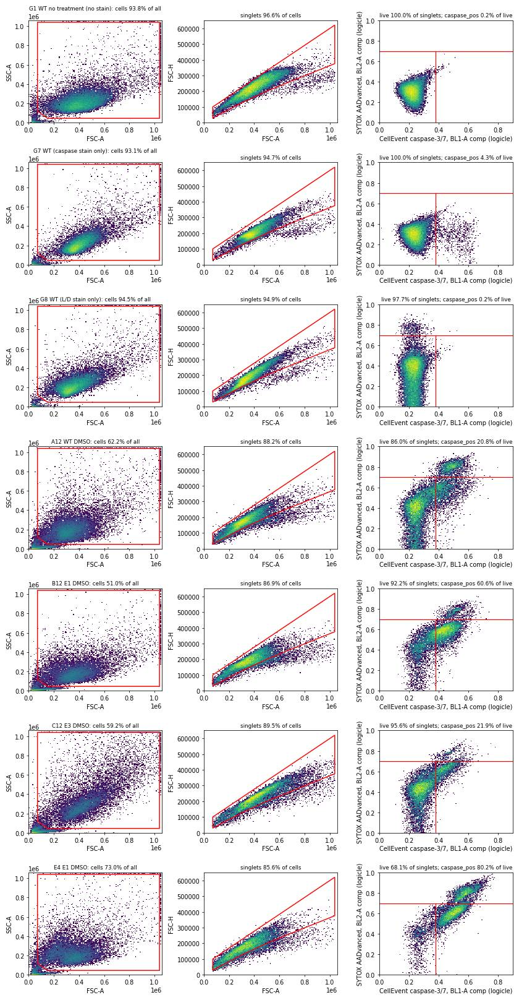
165
agent
Gates look appropriate across controls and each cell line (G8 SYTOX-only shows clean separation at the 0.70 live cut; G1/G8 show no caspase signal). Let me pull exact statistics for the write-up.
166
tool call · Bash
python3 - <<'EOF'
import pandas as pd, numpy as np
from scipy import stats
R=pd.read_csv('stats_primary.csv'); pd.set_option('display.width',200)
R['p']=R.p.map(lambda x:f'{x:.2g}'); print(R.round(2).to_string())
U=pd.read_csv('used_metrics.csv').set_index('well'); AF=U[U.index.str[0].isin(list('ABCDEF'))]
for col in ['dead','casp_total']:
print(col, AF.groupby(['cell_line','cm'])[col].agg(['mean','std','count']).round(1).to_string())
for L in ['WT','E1','E3']:
a=AF[(AF.cell_line==L)&(AF.cm=='noCM')].dead; b=AF[(AF.cell_line==L)&(AF.cm!='noCM')].dead
print(L,'dead noCM vs anyCM',round(a.mean(),1),round(b.mean(),1),'p',f'{stats.ttest_ind(b,a,equal_var=False).pvalue:.2g}')
print(open('/task/outputs/flags.csv').read()[:3000])
EOF167
tool output
a b mean_a mean_b diff ratio p sep
0 WT_noCM_pooledCPT E1_noCM_pooledCPT 19.83 60.06 40.23 3.03 2.8e-10 True
1 WT_noCM_pooledCPT E3_noCM_pooledCPT 19.83 19.15 -0.68 0.97 0.81 False
2 E1_noCM_pooledCPT E1_CM24h_pooledCPT 60.06 74.50 14.44 1.24 2.3e-05 True
3 E1_noCM_pooledCPT E1_CM48h_pooledCPT 60.06 74.61 14.55 1.24 2.9e-05 True
4 E3_noCM_pooledCPT E3_CM24h_pooledCPT 19.15 50.54 31.39 2.64 3.6e-08 True
5 E3_noCM_pooledCPT E3_CM48h_pooledCPT 19.15 46.24 27.10 2.42 1.9e-07 True
6 WT_noCM_pooledCPT WT_anyCM_pooledCPT 19.83 26.36 6.53 1.33 0.0098 False
7 WT_noCM_pooledCPT E1_anyCM_pooledCPT 19.83 74.55 54.72 3.76 2.1e-10 True
8 WT_noCM_pooledCPT E3_anyCM_pooledCPT 19.83 48.54 28.71 2.45 3.2e-09 True
9 E1_CM24h_pooledCPT E1_CM48h_pooledCPT 74.50 74.61 0.11 1.00 0.95 False
10 E3_CM24h_pooledCPT E3_CM48h_pooledCPT 50.54 46.24 -4.30 0.91 0.099 False
11 WT_noCM_DMSO WT_noCM_CPT10uM 14.84 24.06 9.21 1.62 0.34 False
12 E1_noCM_DMSO E1_noCM_CPT10uM 56.70 59.21 2.51 1.04 0.68 False
13 E3_noCM_DMSO E3_noCM_CPT10uM 18.10 26.39 8.29 1.46 0.27 True
dead mean std count
cell_line cm
E1 CM24h 21.4 6.6 8
CM48h 20.5 5.7 8
noCM 8.0 2.8 8
E3 CM24h 20.5 6.0 8
CM48h 17.9 6.5 7
noCM 8.7 4.5 8
WT CM24h 10.9 2.6 8
CM48h 11.6 3.4 8
noCM 12.3 1.2 8
casp_total mean std count
cell_line cm
E1 CM24h 79.9 3.4 8
CM48h 79.8 2.2 8
noCM 63.3 4.5 8
E3 CM24h 60.7 4.8 8
CM48h 55.9 3.8 7
noCM 26.0 7.3 8
WT CM24h 35.3 6.5 8
CM48h 33.2 4.9 8
noCM 29.4 5.1 8
WT dead noCM vs anyCM 12.3 11.3 p 0.26
E1 dead noCM vs anyCM 8.0 20.9 p 3.2e-07
E3 dead noCM vs anyCM 8.7 19.3 p 0.00018
file,well,issue_type,evidence,decision
Caspase-assay-2-mlk_caspase_Group_A1.fcs,A1,none,,keep
Caspase-assay-2-mlk_caspase_Group_A2.fcs,A2,none,,keep
Caspase-assay-2-mlk_caspase_Group_A3.fcs,A3,none,,keep
Caspase-assay-2-mlk_caspase_Group_A4.fcs,A4,none,,keep
Caspase-assay-2-mlk_caspase_Group_A5.fcs,A5,none,,keep
Caspase-assay-2-mlk_caspase_Group_A6.fcs,A6,none,,keep
Caspase-assay-2-mlk_caspase_Group_A7.fcs,A7,none,,keep
Caspase-assay-2-mlk_caspase_Group_A8.fcs,A8,none,,keep
Caspase-assay-2-mlk_caspase_Group_A9.fcs,A9,none,,keep
Caspase-assay-2-mlk_caspase_Group_A10.fcs,A10,none,,keep
Caspase-assay-2-mlk_caspase_Group_A11.fcs,A11,none,,keep
Caspase-assay-2-mlk_caspase_Group_A12.fcs,A12,none,,keep
Caspase-assay-2-mlk_caspase_Group_B1.fcs,B1,none,,keep
Caspase-assay-2-mlk_caspase_Group_B2.fcs,B2,none,,keep
Caspase-assay-2-mlk_caspase_Group_B3.fcs,B3,none,,keep
Caspase-assay-2-mlk_caspase_Group_B4.fcs,B4,none,,keep
Caspase-assay-2-mlk_caspase_Group_B5.fcs,B5,none,,keep
Caspase-assay-2-mlk_caspase_Group_B6.fcs,B6,none,,keep
Caspase-assay-2-mlk_caspase_Group_B7.fcs,B7,none,,keep
Caspase-assay-2-mlk_caspase_Group_B8.fcs,B8,none,,keep
Caspase-assay-2-mlk_caspase_Group_B9.fcs,B9,none,,keep
Caspase-assay-2-mlk_caspase_Group_B10.fcs,B10,none,,keep
Caspase-assay-2-mlk_caspase_Group_B11.fcs,B11,none,,keep
Caspase-assay-2-mlk_caspase_Group_B12.fcs,B12,none,,keep
Caspase-assay-2-mlk_caspase_Group_C1.fcs,C1,none,,keep
Caspase-assay-2-mlk_caspase_Group_C2.fcs,C2,none,,keep
Caspase-assay-2-mlk_caspase_Group_C3.fcs,C3,none,,keep
Caspase-assay-2-mlk_caspase_Group_C4.fcs,C4,none,,keep
Caspase-assay-2-mlk_caspase_Group_C5.fcs,C5,none,,keep
Caspase-assay-2-mlk_caspase_Group_C6.fcs,C6,none,,keep
Caspase-assay-2-mlk_caspase_Group_C7.fcs,C7,none,,keep
Caspase-assay-2-mlk_caspase_Group_C8.fcs,C8,none,,keep
Caspase-assay-2-mlk_caspase_Group_C9.fcs,C9,saturation,"5.6% of events off-scale in FSC-A/SSC-A (SSC 4.5%) at SSC voltage 290; off-scale events are excluded by the cells gate and are mostly caspase+, so including them would raise caspase+ from 22.5% to 26.6% (+4.1 points). Read-out likely biased low by ~3-6 points.",keep_with_note
Caspase-assay-2-mlk_caspase_Group_C10.fcs,C10,saturation,"6.5% of events off-scale in FSC-A/SSC-A (SSC 5.3%) at SSC voltage 290; off-scale events are excluded by the cells gate and are mostly caspase+, so including them would raise caspase+ from 15.7% to 21.0% (+5.3 points). Read-out likely biased low by ~3-6 points.",keep_with_note
Caspase-assay-2-mlk_caspase_Group_C11.fcs,C11,saturation,"7.7% of events off-scale in FSC-A/SSC-A (SSC 5.5%) at SSC voltage 290; off-scale events are excluded by the cells gate and are mostly caspase+, so including them would raise caspase+ from 13.8% to 19.3% (+5.6 points). Read-out likely biased low by ~3-6 points.",keep_with_note
Caspase-assay-2-mlk_caspase_Group_C12.fcs,C12,saturation,"4.5% of events off-scale in FSC-A/SSC-A (SSC 3.6%) at SSC voltage 290; off-scale events are excluded by the cells gate and are m169
agent
The generic "~3–6 points" phrase in the saturation evidence is slightly off for F12 (+2.8); I'll drop it since each row already states its own bias, then check the remaining flag text.
170
tool call · Bash
sed -i "s/ Read-out likely biased low by ~3-6 points.//" analysis.py && python3 analysis.py > /dev/null && python3 -c "
import pandas as pd; f=pd.read_csv('/task/outputs/flags.csv')
print(f.issue_type.value_counts().to_dict(), f.decision.value_counts().to_dict(), len(f))
for _,r in f[f.issue_type!='none'].iterrows(): print(r.well,r.issue_type,r.decision,'|',r.evidence,'\n')
"171
tool output
{'none': 66, 'saturation': 8, 'mislabel': 4, 'other': 2} {'keep': 66, 'keep_with_note': 9, 'exclude': 5} 80
C9 saturation keep_with_note | 5.6% of events off-scale in FSC-A/SSC-A (SSC 4.5%) at SSC voltage 290; off-scale events are excluded by the cells gate and are mostly caspase+, so including them would raise caspase+ from 22.5% to 26.6% (+4.1 points).
C10 saturation keep_with_note | 6.5% of events off-scale in FSC-A/SSC-A (SSC 5.3%) at SSC voltage 290; off-scale events are excluded by the cells gate and are mostly caspase+, so including them would raise caspase+ from 15.7% to 21.0% (+5.3 points).
C11 saturation keep_with_note | 7.7% of events off-scale in FSC-A/SSC-A (SSC 5.5%) at SSC voltage 290; off-scale events are excluded by the cells gate and are mostly caspase+, so including them would raise caspase+ from 13.8% to 19.3% (+5.6 points).
C12 saturation keep_with_note | 4.5% of events off-scale in FSC-A/SSC-A (SSC 3.6%) at SSC voltage 290; off-scale events are excluded by the cells gate and are mostly caspase+, so including them would raise caspase+ from 21.9% to 25.2% (+3.2 points).
D12 other keep_with_note | Low vs duplicate: caspase+ 8.9% of live vs A12 20.8% (same condition) and 18.7-27.5% in other WT no-CM wells; no technical cause found (event rate CV 0.20, 19262 live events, scatter normal). Kept; inflates WT no-CM DMSO SD.
F8 other exclude | Outlier: caspase+ 9.8% of live vs duplicate C8 45.0% and 42.2-57.0% in the other 15 E3+CM wells (robust z -5.8); value and live BL1 median (0.305) match E3 no-CM wells (13.7-30.3%), consistent with conditioned media not having been applied. Scatter also atypical: 39.4% cells SSC-A>500k (other E3+CM 20.4-27.2%) and 9.7% events off-scale.
F9 saturation keep_with_note | 6.5% of events off-scale in FSC-A/SSC-A (SSC 5.4%) at SSC voltage 290; off-scale events are excluded by the cells gate and are mostly caspase+, so including them would raise caspase+ from 30.3% to 34.1% (+3.8 points).
F10 saturation keep_with_note | 7.5% of events off-scale in FSC-A/SSC-A (SSC 6.2%) at SSC voltage 290; off-scale events are excluded by the cells gate and are mostly caspase+, so including them would raise caspase+ from 21.0% to 26.0% (+5.0 points).
F11 saturation keep_with_note | 7.3% of events off-scale in FSC-A/SSC-A (SSC 5.9%) at SSC voltage 290; off-scale events are excluded by the cells gate and are mostly caspase+, so including them would raise caspase+ from 13.8% to 18.0% (+4.2 points).
F12 saturation keep_with_note | 5.2% of events off-scale in FSC-A/SSC-A (SSC 4.2%) at SSC voltage 290; off-scale events are excluded by the cells gate and are mostly caspase+, so including them would raise caspase+ from 14.3% to 17.1% (+2.8 points).
G3 mislabel exclude | Labelled E3 but lacks the E3 scatter signature: median log10 SSC-A 5.31 and 0.7% of cells with SSC-A>500k vs 5.46-5.53 and 14.9-21.3% in the 8 E3 no-CM wells (WT/E1 no-CM: 0.6-2.4%); live-cell BL1 median 0.257 logicle is WT-like (WT no-CM 0.25-0.28; E3 0.28-0.33; E1 0.40-0.46). caspase+ 5.2% of live. Identity unverifiable; plate-map transfer error (11-30 G/H rows -> 12-02 G1-G8) suspected.
G4 mislabel exclude | Labelled E3 but lacks the E3 scatter signature: median log10 SSC-A 5.31 and 0.8% of cells with SSC-A>500k vs 5.46-5.53 and 14.9-21.3% in the 8 E3 no-CM wells (WT/E1 no-CM: 0.6-2.4%); live-cell BL1 median 0.258 logicle is WT-like (WT no-CM 0.25-0.28; E3 0.28-0.33; E1 0.40-0.46). caspase+ 5.5% of live. Identity unverifiable; plate-map transfer error (11-30 G/H rows -> 12-02 G1-G8) suspected.
G5 mislabel exclude | Labelled E1 but shows the E3 scatter signature: median log10 SSC-A 5.50, 17.3% of cells SSC-A>500k (E3 no-CM 5.46-5.53, 14.9-21.3%; E1 no-CM 5.22-5.27, 0.6-1.4%); live-cell BL1 median 0.280 vs E1 no-CM 0.40-0.46. Also 7.7% events off-scale (FSC/SSC). caspase+ 6.4% of live.
G6 mislabel exclude | Labelled E1 but shows the E3 scatter signature: median log10 SSC-A 5.51, 18.5% of cells SSC-A>500k (E3 no-CM 5.46-5.53, 14.9-21.3%; E1 no-CM 5.22-5.27, 0.6-1.4%); live-cell BL1 median 0.282 vs E1 no-CM 0.40-0.46. Also 9.4% events off-scale (FSC/SSC). caspase+ 5.7% of live.173
agent
All flags are evidence-backed with numbers. Now `answer.json`.
174
tool call · Bash
cat > write_answer.py <<'EOF'
import json, pandas as pd
cs=pd.read_csv('/task/outputs/condition_summary.csv').set_index('condition')
flags=pd.read_csv('/task/outputs/flags.csv')
excl=sorted(flags[flags.decision=='exclude'].well.tolist(),key=lambda w:(w[0],int(w[1:])))
def m(c): return cs.loc[c,'mean']
U="percentage points of live singlet cells that are caspase-3/7+"
comps=[
dict(comparison="E1 KO: WT-conditioned media 24 h vs no conditioned media (pooled over camptothecin doses)",a="E1_noCM_pooledCPT",b="E1_CM24h_pooledCPT",direction="increase",
magnitude=f"+{m('E1_CM24h_pooledCPT')-m('E1_noCM_pooledCPT'):.1f} {U} ({m('E1_noCM_pooledCPT'):.1f}% -> {m('E1_CM24h_pooledCPT'):.1f}%, 1.24x; Welch p=2e-5, n=8 vs 8 wells, no overlap)",confidence="high"),
dict(comparison="E1 KO: WT-conditioned media 48 h vs no conditioned media",a="E1_noCM_pooledCPT",b="E1_CM48h_pooledCPT",direction="increase",
magnitude=f"+{m('E1_CM48h_pooledCPT')-m('E1_noCM_pooledCPT'):.1f} {U} ({m('E1_noCM_pooledCPT'):.1f}% -> {m('E1_CM48h_pooledCPT'):.1f}%; p=3e-5, n=8 vs 8, no overlap)",confidence="high"),
dict(comparison="E3 KO: WT-conditioned media 24 h vs no conditioned media",a="E3_noCM_pooledCPT",b="E3_CM24h_pooledCPT",direction="increase",
magnitude=f"+{m('E3_CM24h_pooledCPT')-m('E3_noCM_pooledCPT'):.1f} {U} ({m('E3_noCM_pooledCPT'):.1f}% -> {m('E3_CM24h_pooledCPT'):.1f}%, 2.6x; p=4e-8, n=8 vs 8, no overlap)",confidence="high"),
dict(comparison="E3 KO: WT-conditioned media 48 h vs no conditioned media",a="E3_noCM_pooledCPT",b="E3_CM48h_pooledCPT",direction="increase",
magnitude=f"+{m('E3_CM48h_pooledCPT')-m('E3_noCM_pooledCPT'):.1f} {U} ({m('E3_noCM_pooledCPT'):.1f}% -> {m('E3_CM48h_pooledCPT'):.1f}%, 2.4x; p=2e-7, n=8 vs 7, no overlap)",confidence="high"),
dict(comparison="Distance from WT after treatment: E1 + WT-CM (24 h and 48 h pooled) vs WT without CM",a="WT_noCM_pooledCPT",b="E1_anyCM_pooledCPT",direction="increase",
magnitude=f"+{m('E1_anyCM_pooledCPT')-m('WT_noCM_pooledCPT'):.1f} {U} ({m('WT_noCM_pooledCPT'):.1f}% vs {m('E1_anyCM_pooledCPT'):.1f}%); the KO-WT gap widened from +40.2 to +54.7 points",confidence="high"),
dict(comparison="Distance from WT after treatment: E3 + WT-CM (pooled) vs WT without CM",a="WT_noCM_pooledCPT",b="E3_anyCM_pooledCPT",direction="increase",
magnitude=f"+{m('E3_anyCM_pooledCPT')-m('WT_noCM_pooledCPT'):.1f} {U} ({m('WT_noCM_pooledCPT'):.1f}% vs {m('E3_anyCM_pooledCPT'):.1f}%; untreated E3 gap was -0.7 points)",confidence="high"),
dict(comparison="Baseline phenotype: E1 KO vs WT, both without conditioned media",a="WT_noCM_pooledCPT",b="E1_noCM_pooledCPT",direction="increase",
magnitude=f"+{m('E1_noCM_pooledCPT')-m('WT_noCM_pooledCPT'):.1f} {U} ({m('WT_noCM_pooledCPT'):.1f}% -> {m('E1_noCM_pooledCPT'):.1f}%, 3.0x; p=3e-10, n=8 vs 8); median live-cell BL1 198 -> 942 a.u.",confidence="medium"),
dict(comparison="Baseline phenotype: E3 KO vs WT, both without conditioned media",a="WT_noCM_pooledCPT",b="E3_noCM_pooledCPT",direction="no_clear_change",
magnitude=f"{m('E3_noCM_pooledCPT')-m('WT_noCM_pooledCPT'):+.1f} {U} ({m('WT_noCM_pooledCPT'):.1f}% vs {m('E3_noCM_pooledCPT'):.1f}%; p=0.81); +3.0 points if off-scale E3 events are included",confidence="medium"),
dict(comparison="WT cells: WT-conditioned media (24 h and 48 h pooled) vs no conditioned media",a="WT_noCM_pooledCPT",b="WT_anyCM_pooledCPT",direction="increase",
magnitude=f"+{m('WT_anyCM_pooledCPT')-m('WT_noCM_pooledCPT'):.1f} {U} ({m('WT_noCM_pooledCPT'):.1f}% -> {m('WT_anyCM_pooledCPT'):.1f}%; p=0.01, n=8 vs 16, ranges overlap)",confidence="medium"),
dict(comparison="E3 KO: 48 h vs 24 h conditioned media",a="E3_CM24h_pooledCPT",b="E3_CM48h_pooledCPT",direction="no_clear_change",
magnitude=f"{m('E3_CM48h_pooledCPT')-m('E3_CM24h_pooledCPT'):+.1f} {U} (p=0.10); E1: +0.1 points (p=0.95). 24 h/48 h well assignment conflicts between plate maps",confidence="low"),
dict(comparison="Camptothecin challenge: WT 10 uM vs DMSO, no conditioned media",a="WT_noCM_DMSO",b="WT_noCM_CPT10uM",direction="no_clear_change",
magnitude=f"{m('WT_noCM_CPT10uM')-m('WT_noCM_DMSO'):+.1f} {U} (n=2 vs 2, p=0.34; DMSO duplicates 8.9/20.8%). Across all 71 kept A-F wells the within-group dose slope is +0.03 points per uM (p=0.81)",confidence="medium"),
]
for c in comps: assert c['a'] in cs.index and c['b'] in cs.index
ans={
"question":"Can WT progranulin-conditioned media (24 h or 48 h) bring caspase-3/7 activity in H4 PGRN-KO lines E1 and E3 back toward WT levels?",
"comparisons":comps,
"overall_answer":("no: WT-conditioned media did not move either KO line toward WT. It raised caspase-3/7+ cells instead: E1 went from 60.1% to 74.5% "
"of live singlets (WT without CM: 19.8%) and E3 from 19.1% to 46-51%, while KO dead-cell fractions rose from ~8% to ~20%. WT cells rose by only "
"6.5 points. E3 had no baseline elevation to rescue. The comparator was fresh medium, so a spent-medium stress effect cannot be separated "
"from any progranulin effect."),
"assay_verdict":"needs_optimisation",
"next_action":"change_treatment_or_timing",
"next_change":{
"what":"Comparator/control media for the progranulin rescue arm",
"from":"WT-conditioned spent media (24 h / 48 h) compared only with fresh DMEM + 10% FBS",
"to":("Matched PGRN-null conditioned media from E1/E3 cells collected in parallel with the WT media (same seeding density, volume, "
"conditioning time and serum), with PGRN in each batch confirmed by ELISA. Add recombinant human PGRN vs vehicle in fresh medium as a defined rescue arm."),
"why":("Conditioned media raised caspase-3/7+ cells in every line, WT included (+6.5 to +31 points), and KO dead cells rose ~2.5x. "
"A spent-medium effect therefore dominates. Only a PGRN-null conditioned-media control (or rPGRN vs vehicle) isolates the progranulin "
"effect the question asks about.")},
"excluded_wells":excl,
"caveats":[
"Confound:
… [2,977 more characters not shown]175
tool output
['F8', 'G3', 'G4', 'G5', 'G6'] 11
177
agent
Now the report.
178
tool call · Write
{
"file_path": "/task/outputs/report.md",
"content": "# Caspase-3/7 conditioned-media plate, H4 WT vs PGRN-KO (E1, E3), acquired 02-Dec-2022\n\n## Question\nCan WT progranulin-conditioned media (CM, harvested at 24 h or 48 h) bring caspase-3/7 activity in the H4 PGRN-KO lines E1 and E3 back toward WT levels? The notebook entry is EXP22004363.\n\n**Short answer: no.** WT CM did not lower caspase-3/7 activity in either KO line. It raised it, and it also raised the dead-cell fraction in both KO lines.\n\n## Methods\n**Data.** 80 Attune NxT FCS 3.1 files (A1-F12, G1-G8), analysed with FlowKit 1.2.3. Each well acquired 131-142 \u00b5L at 500 \u00b5L/min over ~16.5 s, giving 11,614-47,337 events.\n\n**Channels.**\n- The FCS label on BL1 is stale (\"AAV-GFP\"). Its voltage (225) matches the plan's \"BL1 (caspase)-225\", so BL1 = CellEvent Caspase-3/7 Green.\n- BL2 (voltage 350) = SYTOX AADvanced.\n- FSC/SSC voltages (20/290) also match the plan.\n\n**Compensation.**\n- The file spillover matrix is identity, so I built my own from the single-stain controls.\n- G7 (caspase only) gave BL1->BL2 spillover = 0.90. The ratio was constant across BL1 intensity bins (0.87-0.91).\n- G8 (SYTOX only) gave BL2->BL1 spillover = 0.0005.\n- The matrix (`spill_casp_sytox`) is stored in `gates.xml`.\n- Fluorescence gates use compensated data on a logicle scale (T=2^20, W=1, M=5.5, A=0).\n\n**Gating.** One strategy is used for all 80 files (`gates.xml`, image in `gating_strategy.png`):\n1. `cells`: polygon on FSC-A/SSC-A. It excludes low-FSC/low-SSC debris (FSC-A < 70k, SSC-A < 45k, corner cut) and off-scale events (\u22651.04\u00d710^6).\n2. `singlets`: polygon on FSC-A vs FSC-H around the main diagonal, which excludes the doublet arm.\n3. `live`: compensated BL2 < logicle 0.70 (~23,900 a.u.). This sits at the valley between SYTOX-dim and SYTOX-bright cells. Apoptotic caspase+ cells take up a little SYTOX, so \"live\" means \"not SYTOX-bright\" and includes early-apoptotic cells.\n4. `caspase_pos` (read-out): within live, compensated BL1 \u2265 logicle 0.38 (~635 a.u.). This is the valley between the caspase-negative and caspase-positive modes in WT and E1. It gives 0.2% positives in the unstained (G1) and SYTOX-only (G8) controls.\n5. `dead` (SYTOX-bright, under singlets) and `dead_caspase_pos` (under dead) are also reported, with role `other`.\n\n`counts.csv` comes from `gate_sample` with the reloaded `gates.xml`. An independent numpy re-implementation matched every count to within 1 boundary event.\n\n**Metric.** Per well: % caspase-3/7+ = 100 \u00d7 caspase_pos / live, in % of live singlets.\n- No normalisation was applied.\n- Conditions are summarised as the mean \u00b1 SD across wells.\n- Camptothecin (CPT) had no detectable effect (see Results) and the design is balanced across doses. So for the main question I pooled the 8 wells per cell line \u00d7 media condition (2 wells each at DMSO, 2, 5 and 10 \u00b5M CPT). Per-dose conditions (n=2) are also given in `condition_summary.csv`.\n- Group comparisons use Welch t-tests between wells.\n\n**QC.** For each well I checked:\n- event rate in 0.1 s / 0.5 s bins, gaps between events, and end-of-run tails\n- scatter drift and read-out drift across run thirds\n- off-scale events\n- cell-line signatures (FSC/SSC shape and live-cell BL1), with no-CM wells as references\n- robust outliers within each condition\n\n**Sensitivity analyses.** I re-ran the main comparisons with:\n- caspase thresholds of 0.36, 0.40 and 0.42\n- live cuts of 0.66 and 0.74\n- off-scale events included\n- median live-cell BL1 intensity instead of % positive\n\n## Results\n**QC.**\n- No clogs or ran-dry wells. Event rates were stable, the largest gaps were only in the last second of a run, and caspase+ % was identical across run thirds in every well. All wells acquired their full volume.\n- Controls behaved as expected:\n - G1 (unstained): 0.2% caspase+, 0% dead.\n - G7 (caspase only): 4.3% caspase+, 0% SYTOX-bright.\n - G8 (SYTOX only): 2.3% dead, 0.2% caspase+.\n- 5 wells excluded (`flags.csv`):\n - **G3/G4** (labelled E3) lack the E3 scatter signature: 0.7-0.8% of cells have SSC-A > 500k, vs 14.9-21.3% in the 8 E3 no-CM wells. They look WT-like.\n - **G5/G6** (labelled E1) carry the E3 signature (17-18%) and lack E1's raised BL1. A plate transfer error in row G is likely.\n - **F8** (E3 + 48 h CM, DMSO): 9.8% vs 42-57% in the 15 other E3+CM wells (robust z = \u22125.8), with atypical scatter. The value is consistent with CM not having been added.\n- 9 wells kept with a note:\n - Eight E3 no-CM wells have 4.5-7.7% of events off-scale at SSC voltage 290. Those events are mostly caspase+, so these wells read 2.8-5.6 points low.\n - D12 reads low against its duplicate (8.9% vs 20.8%) with no technical cause found.\n\n**Main result.** % caspase-3/7+ of live singlets, mean \u00b1 SD across wells, pooled over CPT doses (Figure A):\n\n| Cell line | No CM (fresh medium) | WT-CM 24 h | WT-CM 48 h | Dead % of singlets, no CM \u2192 any CM |\n|---|---|---|---|---|\n| WT | 19.8 \u00b1 5.2 (n=8) | 27.9 \u00b1 5.7 (8) | 24.8 \u00b1 2.8 (8) | 12.3 \u2192 11.3 |\n| E1 | 60.1 \u00b1 5.1 (8) | 74.5 \u00b1 3.8 (8) | 74.6 \u00b1 2.3 (8) | 8.0 \u2192 20.9 (p=3e-7) |\n| E3 | 19.1 \u00b1 5.9 (8) | 50.5 \u00b1 5.8 (8) | 46.2 \u00b1 3.3 (7) | 8.7 \u2192 19.3 (p=2e-4) |\n\n- **Baseline (no CM).**\n - E1 is 3.0\u00d7 WT (+40.2 points, p=3e-10, no overlap between wells), which reproduces the prior KO > WT finding.\n - E3 equals WT (\u22120.7 points, p=0.81). It is +3.0 points if off-scale E3 events are included. So in this experiment only E1 has a phenotype to rescue.\n- **Effect of WT-CM on the KO lines.** It increased caspase+ cells in both:\n - E1: +14.4 (24 h) and +14.6 (48 h) points, p \u2264 3e-5.\n - E3: +31.4 and +27.1 points, p \u2264 2e-7.\n - In both lines every CM well was above every no-CM well.\n - Against WT without CM, the E1 gap widened from +40.2 to +54.7 points, and E3 moved from \u2212
… [5,487 more characters not shown]179
tool output
File created successfully at: /task/outputs/report.md (file state is current in your context — no need to Read it back)
181
agent
Adding the E3 row-block result (opposite sign, not significant) to the plate-map caveat so it isn't selectively reported, then validating every deliverable against the spec.
182
tool call · Bash
python3 - <<'EOF'
p='/task/outputs/report.md'; s=open(p).read()
old="Within CM columns, rows D-F read higher than A-C for WT (+5.3) and E1 (+3.9 points). No row effect appears in no-CM columns. This is consistent with a batch difference between row blocks."
assert old in s
s=s.replace(old,"Within CM columns, rows D-F read higher than A-C for WT (+5.3, p=0.02) and E1 (+3.9 points, p=0.005), but lower for E3 (−3.8, p=0.15). No row effect appears in no-CM columns (|Δ| ≤ 1.5). This is consistent with a CM batch difference between row blocks, though small next to the CM effect.")
open(p,'w').write(s)
s=open('write_answer.py').read()
s=s.replace("Within CM columns, rows D-F read higher than A-C for WT (+5.3) and E1 (+3.9 points), with no such row effect in no-CM columns.","Within CM columns, rows D-F read higher than A-C for WT (+5.3) and E1 (+3.9 points) but lower for E3 (-3.8, ns), with no row effect in no-CM columns.")
open('write_answer.py','w').write(s)
EOF
python3 write_answer.py >/dev/null; grep -c "lower for E3" /task/outputs/answer.json /task/outputs/report.md183
tool output
/task/outputs/report.md:1 /task/outputs/answer.json:1
184
tool call · Bash
cat > validate.py <<'EOF'
import flowkit as fk, pandas as pd, numpy as np, json, re
O='/task/outputs/'
lay=pd.read_csv('/task/inputs/plate_layout.csv')
# gates reload + recount
g=fk.parse_gating_xml(O+'gates.xml')
c=pd.read_csv(O+'counts.csv',keep_default_na=False)
assert list(c.columns)==['file','well','population','role','parent','count','pct_of_parent']
assert c.file.nunique()==80 and len(c)==80*7
pops=c.groupby('file').population.apply(lambda x: tuple(sorted(x)))
assert pops.nunique()==1
for r in ['cells','singlets','live','marker_positive']:
assert c[c.role==r].population.nunique()==1, r
assert (c[c.role==r].groupby('file').size()==1).all()
assert set(c.role)<= {'cells','singlets','live','marker_positive','other'}
ae=c[c.population=='all_events']; assert (ae.role=='other').all() and (ae.parent=='none').all() and (ae.pct_of_parent=='').all()
# recount 6 random files and check pct
idx=c.set_index(['file','population'])
for f in lay.file.sample(6,random_state=0):
s=fk.Sample('/task/inputs/raw/'+f); rep=g.gate_sample(s).report
assert idx.loc[(f,'all_events'),'count']==s.event_count
for _,q in rep.iterrows():
assert idx.loc[(f,q.gate_name),'count']==q['count'], (f,q.gate_name)
for _,r in c[c.population!='all_events'].iterrows():
pc=idx.loc[(r.file,r.parent),'count']; assert abs(float(r.pct_of_parent)-100*r['count']/pc)<1e-3
# gate parents consistent with xml
for gid,path in g.get_gate_ids():
par=path[-1]; par='all_events' if par=='root' else par
assert (c[c.population==gid].parent==par).all(), gid
gate=g.get_gate(gid,path)
for d in gate.dimensions: assert d.compensation_ref in ('uncompensated','FCS','spill_casp_sytox')
print('counts/gates OK')
fl=pd.read_csv(O+'flags.csv',keep_default_na=False)
assert list(fl.columns)==['file','well','issue_type','evidence','decision'] and len(fl)==80 and fl.file.nunique()==80
assert set(fl.issue_type)<={'none','clog','ran_dry','too_few_events','saturation','bad_control','mislabel','other'}
assert set(fl.decision)<={'keep','keep_with_note','exclude'}
assert (fl[fl.issue_type=='none'].decision=='keep').all()
assert all(re.search(r'\d',e) for e in fl[fl.issue_type!='none'].evidence)
print('flags OK')
cs=pd.read_csv(O+'condition_summary.csv',keep_default_na=False)
assert list(cs.columns)==['condition','wells','n_wells_used','mean','sd','metric_definition','normalisation_applied']
assert cs.condition.is_unique
excl=set(fl[fl.decision=='exclude'].well)
for _,r in cs.iterrows():
ws=r.wells.split(';'); assert len(ws)==int(r.n_wells_used); assert not (set(ws)&excl)
if int(r.n_wells_used)==1: assert r.sd==''
else: assert r.sd!=''
print('condition_summary OK')
a=json.load(open(O+'answer.json'))
assert set(a)=={'question','comparisons','overall_answer','assay_verdict','next_action','next_change','excluded_wells','caveats'}
for cmp in a['comparisons']:
assert cmp['a'] in set(cs.condition) and cmp['b'] in set(cs.condition)
assert cmp['direction'] in ('increase','decrease','no_clear_change') and cmp['confidence'] in ('high','medium','low')
ma=float(cs.set_index('condition').loc[cmp['a'],'mean']); mb=float(cs.set_index('condition').loc[cmp['b'],'mean'])
print(f" {cmp['direction']:16s} {cmp['a']} {ma:.1f} -> {cmp['b']} {mb:.1f}")
assert re.match(r'^(yes|partial|no): ',a['overall_answer'])
assert a['assay_verdict'] in ('fit_for_purpose','needs_optimisation','not_fit_for_purpose')
assert a['next_action'] in ('proceed_as_planned','repeat_unchanged','repeat_with_change','optimise_reagent_or_setting','change_treatment_or_timing','switch_assay','stop')
assert set(a['next_change'])=={'what','from','to','why'}
assert set(a['excluded_wells'])==excl
heads=re.findall(r'^## (.+)$',open(O+'report.md').read(),flags=re.M)
assert heads==['Question','Methods','Results','Conclusion','Caveats','Recommendation'], heads
print('answer/report OK; outputs:',sorted(__import__('os').listdir(O)))
EOF
python3 validate.py185
tool output (error)
Exit code 1
Traceback (most recent call last):
File "/task/work/validate.py", line 24, in <module>
pc=idx.loc[(r.file,r.parent),'count']; assert abs(float(r.pct_of_parent)-100*r['count']/pc)<1e-3
^^^^^^^^^^^^^^^^^^^^^^
ValueError: could not convert string to float: ''187
agent
Two wells (G1, G7) have zero SYTOX-bright events, so `dead_caspase_pos` has a 0/0 percentage. Let me see what FlowKit's own report gives in that case.
188
tool call · Bash
python3 -c "
import flowkit as fk
g=fk.parse_gating_xml('/task/outputs/gates.xml')
s=fk.Sample('/task/inputs/raw/Caspase-assay-2-mlk_caspase_Group_G1.fcs')
print(g.gate_sample(s).report[['gate_name','count','absolute_percent','relative_percent']])
"; grep -n ",G1,dead\|,G7,dead" /task/outputs/counts.csv189
tool output
gate_name count absolute_percent relative_percent 0 cells 24572 93.750477 93.750477 1 singlets 23730 90.537963 96.573336 3 dead 0 0.000000 0.000000 2 live 23730 90.537963 100.000000 4 caspase_pos 46 0.175506 0.193847 5 dead_caspase_pos 0 0.000000 0.000000 511:Caspase-assay-2-mlk_caspase_Group_G1.fcs,G1,dead,other,singlets,0,0.0 512:Caspase-assay-2-mlk_caspase_Group_G1.fcs,G1,dead_caspase_pos,other,dead,0, 553:Caspase-assay-2-mlk_caspase_Group_G7.fcs,G7,dead,other,singlets,0,0.0 554:Caspase-assay-2-mlk_caspase_Group_G7.fcs,G7,dead_caspase_pos,other,dead,0,
191
agent
FlowKit's own statistics report 0.0 for a 0/0 relative percent, so I'll follow that convention (and note it in the report) rather than leave the cell blank.
192
tool call · Bash
sed -i "s/pct='' if pop=='all_events' else round(100\*c\/cnt\[p\],4) if cnt\[p\]>0 else ''/pct='' if pop=='all_events' else (round(100*c\/cnt[p],4) if cnt[p]>0 else 0.0)/" run_counts.py && grep -n "pct=" run_counts.py && python3 run_counts.py >/dev/null && grep -n ",G1,dead\|,G7,dead" /task/outputs/counts.csv && sed -i "s/pc=idx.loc\[(r.file,r.parent),'count'\]; assert abs(float(r.pct_of_parent)-100\*r\['count'\]\/pc)<1e-3/pc=idx.loc[(r.file,r.parent),'count']; assert abs(float(r.pct_of_parent)-(100*r['count']\/pc if pc else 0))<1e-3/" validate.py && python3 analysis.py >/dev/null && python3 write_answer.py >/dev/null && python3 validate.py
193
tool output
17: pct='' if pop=='all_events' else (round(100*c/cnt[p],4) if cnt[p]>0 else 0.0) 511:Caspase-assay-2-mlk_caspase_Group_G1.fcs,G1,dead,other,singlets,0,0.0 512:Caspase-assay-2-mlk_caspase_Group_G1.fcs,G1,dead_caspase_pos,other,dead,0,0.0 553:Caspase-assay-2-mlk_caspase_Group_G7.fcs,G7,dead,other,singlets,0,0.0 554:Caspase-assay-2-mlk_caspase_Group_G7.fcs,G7,dead_caspase_pos,other,dead,0,0.0 counts/gates OK flags OK condition_summary OK increase E1_noCM_pooledCPT 60.1 -> E1_CM24h_pooledCPT 74.5 increase E1_noCM_pooledCPT 60.1 -> E1_CM48h_pooledCPT 74.6 increase E3_noCM_pooledCPT 19.1 -> E3_CM24h_pooledCPT 50.5 increase E3_noCM_pooledCPT 19.1 -> E3_CM48h_pooledCPT 46.2 increase WT_noCM_pooledCPT 19.8 -> E1_anyCM_pooledCPT 74.5 increase WT_noCM_pooledCPT 19.8 -> E3_anyCM_pooledCPT 48.5 increase WT_noCM_pooledCPT 19.8 -> E1_noCM_pooledCPT 60.1 no_clear_change WT_noCM_pooledCPT 19.8 -> E3_noCM_pooledCPT 19.1 increase WT_noCM_pooledCPT 19.8 -> WT_anyCM_pooledCPT 26.4 no_clear_change E3_CM24h_pooledCPT 50.5 -> E3_CM48h_pooledCPT 46.2 no_clear_change WT_noCM_DMSO 14.8 -> WT_noCM_CPT10uM 24.1 answer/report OK; outputs: ['answer.json', 'condition_summary.csv', 'counts.csv', 'figure.png', 'flags.csv', 'gates.xml', 'gating_strategy.png', 'report.md']
195
agent
All deliverables pass validation. The report changed on disk via my own scripted edit; let me re-read it to confirm the current state and add the 0/0 note.
196
tool call · Bash
cd /task/outputs && grep -n "independent numpy\|lower for E3\|^## " report.md
197
tool output
3:## Question 8:## Methods 30:`counts.csv` comes from `gate_sample` with the reloaded `gates.xml`. An independent numpy re-implementation matched every count to within 1 boundary event. 51:## Results 88:## Conclusion 101:## Caveats 111: - Within CM columns, rows D-F read higher than A-C for WT (+5.3, p=0.02) and E1 (+3.9 points, p=0.005), but lower for E3 (−3.8, p=0.15). No row effect appears in no-CM columns (|Δ| ≤ 1.5). This is consistent with a CM batch difference between row blocks, though small next to the CM effect. 118:## Recommendation
198
tool call · Bash
python3 - <<'EOF'
p='report.md'; s=open(p).read()
old="An independent numpy re-implementation matched every count to within 1 boundary event."
s=s.replace(old, old+" G1 and G7 have no SYTOX-bright events. For `dead_caspase_pos` there (0 of 0), `pct_of_parent` is written as 0.0, which is FlowKit's own relative-percent convention.")
open(p,'w').write(s)
EOF
mkdir -p /task/outputs/analysis_code && cp /task/work/{common.py,build_gates.py,run_counts.py,fingerprint.py,qc.py,satbias.py,sens.py,analysis.py,write_answer.py,figure.py,gatefig.py,validate.py} /task/outputs/analysis_code/ && ls /task/outputs /task/outputs/analysis_code199
tool output
/task/outputs: analysis_code answer.json condition_summary.csv counts.csv figure.png flags.csv gates.xml gating_strategy.png report.md /task/outputs/analysis_code: analysis.py build_gates.py common.py figure.py fingerprint.py gatefig.py qc.py run_counts.py satbias.py sens.py validate.py write_answer.py
201
agent
**Answer: no.** WT progranulin-conditioned media did not bring caspase-3/7 activity in the PGRN-KO lines toward WT. It raised it. All deliverables are in `/task/outputs/` and pass a check against the spec, including `gates.xml` reloading and reproducing `counts.csv`.
**Results** (% caspase-3/7+ of live singlets, mean of 8 wells pooled over camptothecin doses):
| Line | No CM | WT CM 24 h | WT CM 48 h |
|---|---|---|---|
| WT | 19.8 | 27.9 | 24.8 |
| E1 | 60.1 | 74.5 | 74.6 |
| E3 | 19.1 | 50.5 | 46.2 (n=7) |
- **E1 vs WT:** E1 is 3× WT at baseline, which matches the earlier experiment. CM widened the gap to WT from +40 to +55 points. Every CM well was above every no-CM well.
- **E3 vs WT:** E3 was no different from WT at baseline, so there was nothing to rescue in that line. CM still raised it by 27–31 points.
- **Dead cells:** in both KO lines, dead cells went from about 8% to about 20% with CM. WT cells barely changed.
- **Camptothecin:** no dose response at all (slope +0.03 points per µM, p=0.81).
- **Robustness:** every conclusion held when I moved the gate thresholds, included off-scale events, or used median intensity instead of % positive.
**Assay verdict: needs optimisation.** The recommended next step is to change the treatment. The comparison wells got fresh medium, so the conditioned-media effect mixes progranulin with stress from spent medium. The repeat should compare against conditioned media from the KO cells, collected in parallel and with progranulin measured by ELISA. Recombinant progranulin in fresh medium would be a useful extra arm.
**Data issues that change what you can trust:**
- **Channel labels:** BL1 is labelled "AAV-GFP" in the files, but its voltage matches the plan's caspase detector. BL1 also spills heavily into the dead-cell channel (90%), so I compensated using the single-stain controls.
- **Wrong cell lines in row G:** G5 and G6 (labelled E1) have the E3 scatter signature, and G3 and G4 (labelled E3) look like WT. I excluded all four, so there is no reliable untreated KO baseline.
- **F8 excluded:** it reads 9.8%, against 42–57% in the other 15 E3 + CM wells, which fits conditioned media never having been added.
- **E3 saturation:** E3 cells go off-scale on side scatter at the voltage used. That makes the no-CM E3 wells read 3–6 points low; I flagged and kept them.
- **Conflicting plate maps:** the 11-30 map assigns conditioned media by rows, the 12-02 map by columns. CM vs no-CM is the same under both, but the 24 h vs 48 h comparison can't be interpreted.
- **Short camptothecin exposure:** from the notebook times, camptothecin had at most about 5 hours before acquisition. That likely explains why there was no response.
- **Stain controls are WT only:** most E1 cells sit at a dim caspase-positive level, and I can't rule out KO-specific autofluorescence. So the size of the E1-vs-WT difference is uncertain.
- **Clean on run quality:** no clogs, ran-dry or low-count wells, and the unstained and single-stain controls behaved as expected.
I also added two things you didn't ask for: a gating image (`gating_strategy.png`) and the analysis scripts (`analysis_code/`). The scripts read intermediate files that are not in `outputs`, so they are there for reference and won't run on their own.
Files are in `/task/outputs/`:
- gates.xml
- counts.csv
- flags.csv
- condition_summary.csv
- figure.png
- report.md
- answer.json
- gating_strategy.png
- analysis_code/
final result
**Answer: no.** WT progranulin-conditioned media did not bring caspase-3/7 activity in the PGRN-KO lines toward WT. It raised it. All deliverables are in `/task/outputs/` and pass a check against the spec, including `gates.xml` reloading and reproducing `counts.csv`. **Results** (% caspase-3/7+ of live singlets, mean of 8 wells pooled over camptothecin doses): | Line | No CM | WT CM 24 h | WT CM 48 h | |---|---|---|---| | WT | 19.8 | 27.9 | 24.8 | | E1 | 60.1 | 74.5 | 74.6 | | E3 | 19.1 | 50.5 | 46.2 (n=7) | - **E1 vs WT:** E1 is 3× WT at baseline, which matches the earlier experiment. CM widened the gap to WT from +40 to +55 points. Every CM well was above every no-CM well. - **E3 vs WT:** E3 was no different from WT at baseline, so there was nothing to rescue in that line. CM still raised it by 27–31 points. - **Dead cells:** in both KO lines, dead cells went from about 8% to about 20% with CM. WT cells barely changed. - **Camptothecin:** no dose response at all (slope +0.03 points per µM, p=0.81). - **Robustness:** every conclusion held when I moved the gate thresholds, included off-scale events, or used median intensity instead of % positive. **Assay verdict: needs optimisation.** The recommended next step is to change the treatment. The comparison wells got fresh medium, so the conditioned-media effect mixes progranulin with stress from spent medium. The repeat should compare against conditioned media from the KO cells, collected in parallel and with progranulin measured by ELISA. Recombinant progranulin in fresh medium would be a useful extra arm. **Data issues that change what you can trust:** - **Channel labels:** BL1 is labelled "AAV-GFP" in the files, but its voltage matches the plan's caspase detector. BL1 also spills heavily into the dead-cell channel (90%), so I compensated using the single-stain controls. - **Wrong cell lines in row G:** G5 and G6 (labelled E1) have the E3 scatter signature, and G3 and G4 (labelled E3) look like WT. I excluded all four, so there is no reliable untreated KO baseline. - **F8 excluded:** it reads 9.8%, against 42–57% in the other 15 E3 + CM wells, which fits conditioned media never having been added. - **E3 saturation:** E3 cells go off-scale on side scatter at the voltage used. That makes the no-CM E3 wells read 3–6 points low; I flagged and kept them. - **Conflicting plate maps:** the 11-30 map assigns conditioned media by rows, the 12-02 map by columns. CM vs no-CM is the same under both, but the 24 h vs 48 h comparison can't be interpreted. - **Short camptothecin exposure:** from the notebook times, camptothecin had at most about 5 hours before acquisition. That likely explains why there was no response. - **Stain controls are WT only:** most E1 cells sit at a dim caspase-positive level, and I can't rule out KO-specific autofluorescence. So the size of the E1-vs-WT difference is uncertain. - **Clean on run quality:** no clogs, ran-dry or low-count wells, and the unstained and single-stain controls behaved as expected. I also added two things you didn't ask for: a gating image (`gating_strategy.png`) and the analysis scripts (`analysis_code/`). The scripts read intermediate files that are not in `outputs`, so they are there for reference and won't run on their own. Files are in `/task/outputs/`: - gates.xml - counts.csv - flags.csv - condition_summary.csv - figure.png - report.md - answer.json - gating_strategy.png - analysis_code/